CE Desktop RLP User Guide
Version: CE Pro v4.9
RLP results — MW link paths and availability predictions — are displayed on the ArcGIS Pro map view:
Arrange your ArcGIS Pro panes for an efficient RLP workflow:
About Cellular Expert Cellular Expert UAB (CE) developed ultra-fast wave propagation, communication systems deployment planning, and radio/optical visibility calculation software for ESRI’s ArcGIS mapping environment, which is widely used within Telecom, Defense, IoT, and other companies and organizations. CE’s communication network planning, network asset management, operational support software, and customer- tailored solutions enhance the intelligence and business efficiency of more than 170 communication network companies, regulators, and defense organizations in more than 50 countries. Copyright © 2026 UAB CELLULAR EXPERT. All rights reserved. Cellular Expert and Cellular Expert logo are registered trademarks, @cellular-expert.com and www.cellular-expert.com are service marks of UAB CELLULAR EXPERT in Lithuania and some other countries.
1. Software Purpose and Functionality
Cellular Expert Desktop for ArcGIS Pro (CE Pro) is a professional radio coverage planning software tool designed on top of the Esri ArcGIS Pro environment. The CE Pro is a highly versatile and functional tool, covering the network design functionality needs of most professional radio communication planners and developers. It could support network planning and optimization for the entire range of wireless technologies in frequencies from 10 kHz to 350 GHz. The key features and benefits of utilizing Cellular Expert software are as follows:
-
CE Pro is a purpose-built extension of ESRI software, a world-renowned standard in GIS environments. This means that along with wireless network planning and optimization, it gives users various value-added GIS/mapping functionalities to manage, visualize feature classes or roasters, create reports, and graphs, or automate workflows,
-
CE Pro is made of several processing engines and functional modules and therefore may be easily configured for various business functions: network planning, network engineering, technology information support to sales and marketing, network assets management, and network operational maintenance and supervision,
-
CE Pro is maintained and constantly developed by a dedicated agile team of software developers and radio planners, allowing attentive responsiveness to customer needs and developing custom-tailored solutions. CE Pro performs mobile network coverage analysis based on:
-
Site and cell level details of radio equipment complement, specifications, cell and component carriers configuration,
-
Subscriber characteristics – geographic distribution density, generated traffic to estimate network/cell loading,
-
DTM, buildings, and clutter-based deterministic point-to-area radio wave propagation modeling. CE Pro allows the user to input and use a broad variety of GIS and network data to support the simulations, as the overall quality of coverage calculations is dependent on the completeness and detail of technical network data and the resolution and quality of the GIS data. CE Pro can efficiently simulate wide area network coverage using the GIS data with a resolution of down to sub-meter. Calculated results of coverage predictions could be presented as coverage raster maps. CE Pro is capable of modeling various wireless technologies: cellular (2G/3G/4G/5G), PMR/PAMR (TETRA, APCO, others), FWA/BWA, IoT (LoRa/SigFox, others), as well as fixed microwave links. Therefore, it may be used as a radio planning tool in various industries: Mobile Operators, Integrated Telecom Companies, Wireless Internet Service providers, Regulatory authorities, Utilities, Broadband Infrastructure providers, Defense organizations, as well as any other users of radiocommunication systems. In the following, we summarize the key functionalities of the tool. Data Management The tool allows the importation, storage, and management of detailed technical data on network nodes, such as sites, cells, RF transmitters, and antennas. Signal Strength Prediction The tool contains several in-built path loss prediction models that allow the user to easily start simulations based on the evaluation of the most essential pathloss contributing factors. The following two models constitute the starting set: • Free space – typically used for modeling short-range mobile communications, fixed links, or other radiocommunications applications with prevalent Line-of-Sight conditions on propagation paths,
• UniMacro – a proprietary universal model for wide area mobile communication systems that flexibly accounts for a variety of propagation paths as determined for each specific reception point based on terrain and clutter data vs. configuration of the modeled system. Further details on path loss models and their configuration options are provided in the relevant section of this manual. Model Tuning The tool provides an automated method for fine-tuning propagation model parameters to fit the specific scenario and type of area of network deployment based on analyzing real field strength measurement results. Radio Coverage Calculation for Different Mobile Technologies Radio coverage calculation is assisted in the tool by the possibility to use pre-loaded cell configuration templates that are tailored to typical technical parameters of base stations in different Radio Access Technologies. Accordingly, the model settings and outputs will be adjusted to suit the scenario pertinent to that technology, i.e.: • 2G – radio coverage is calculated in dBm as receive power level of narrow-band (200 kHz) signal, • 3G – radio coverage is calculated in dBm as the receive power level of a single broadband (3.85 MHz) carrier, • 4G/5G – radio coverage is calculated in dBm as the equivalent RSRP of a single sub-carrier component in the complex OFDM broadband signal. • Wi-Fi - wireless communication technology based on the IEEE 802.11 standards, used for setting up local area networks (WLANs) and providing internet access in various settings without requiring cable connections. Profile Analysis The tool provides powerful GIS analytical features to analyze the terrain and clutter on the fixed link path, such as allowing to estimate of the Fresnel zone clearance condition, Power Budget, Path loss and Angles between Tx and Rx.
2. System requirements
This chapter will guide you through the minimal hardware and software requirements. Note: requirements can vary significantly, depending on the acceptable calculation time and task complexity.
2.1 Minimal Requirements for Hardware
Processor (CPU): • Minimum: 8 cores, hyperthreaded • Recommended: 16 cores (Optional) Requirements for GPU-accelerated calculations • GPU – any NVIDIA GPU with CUDA capabilities (https://developer.nvidia.com/cuda-gpus) • Driver version: 456.38 or later • CUDA Toolkit 11.0 or later Memory/RAM: • Minimum: 16 GB • Recommended: 32 GB Storage: • Minimum: 500 GB of free space • Recommended: 2TB or more of free space on a solid-state drive (SSD)
2.2 Minimal Requirements for Software
Cellular Expert runs on Microsoft Windows 10 or higher operating system. It requires: • Microsoft .NET 8.0 Download .NET 8.0 Desktop Runtime (v8.0.0) - Windows x64 Installer • Microsoft Visual C++ Redistributable packages 2015-2022 https://aka.ms/vs/17/release/vc_redist.x64.exe • .NET support for ArcGIS libraries • ArcGIS Pro from version 3.3.x
3. License types
Only a Single Use Cellular Expert license is available. The license type is annual and dedicated to one workstation connected with ArcGIS Online, which is used for ArcGIS Pro.
3.1 Single-User Environment
For the Single-User configuration of Cellular Expert, all information about radio network objects is stored in a personal geodatabase (GDB format) or locally on the disc (calculation results, raster data in GeoTIFF format, etc.). Geographical data can be stored: • Locally on a disc An ArcGIS Pro license and an active ArcGIS Named User or ArcGIS Pro Standalone are required to operate in the Single-User environment.
4. Getting Started
Welcome to Cellular Expert. This chapter will guide you through project creation and analysis. It includes the installation and preparation of the Cellular Expert extension, as well as using it for the first time and creating a project. Note: the tools are not explained in this chapter. They are referenced in other chapters of this guide.
4.1 Installation
• If applicable, uninstall the previous version of Cellular Expert for ArcGIS Pro • Make sure that .NET 8.0 is installed • Make sure that ArcGIS Pro 3.3.x is installed • Run the ceProSetup.msi file to install the new version of Cellular Expert for ArcGIS Pro • After successful installation, open Task Manager > Services, and run CE_Pro_Prediction_Service
4.2 Activation
This step is required for new users. If the Cellular Expert for ArcGIS Pro license has already been activated, please skip this step. You can activate the license in two ways: First way:
-
Open ArcGIS Pro and select Settings
-
Navigate to Licensing → External Extensions
-
Find the Cellular Expert entry in the extensions table
-
Click the checkmark in the Enabled field. The License Activation dialog will appear
-
Copy the User Key and send it to support@cellular-expert.com. You will be provided with a License Activation Key which must be entered into the same dialogue
-
Press Activate License and the license will be activated, enabling the acquired versions of the add-on Second way:
-
Create an empty ArcGIS Pro project
-
Navigate to Insert and select New Map. After the map insertion, the Cellular Expert tabs will be enabled
-
Navigate to any of the Cellular Expert tabs and select License Information in the About section.
-
Copy the User Key and send it to support@cellular-expert.com. You will be provided with a License Activation Key which must be entered into the same dialogue
-
Press Activate License and the license will be activated, enabling the acquired versions of the add-on If you want to check the expiration date of the license you can:
-
Open ArcGIS Pro and start/open a project with an active map
-
Navigate to the Cellular Expert tab
-
Select License Information in the About section
If you encounter any problems or want additional details about the license, please contact Cellular Expert at support@cellular-expert.com. For more information, see the chapter Technical Support.
4.3 Tools
The Cellular Expert tools are in the Cellular Expert add-on. They appear automatically after installation of
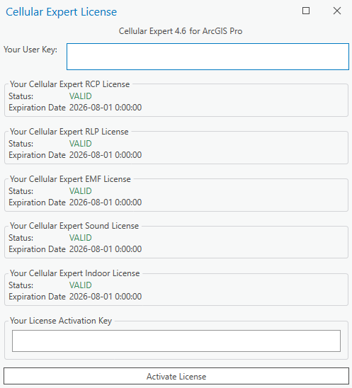
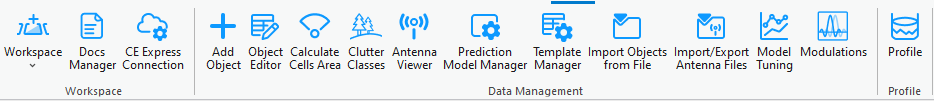

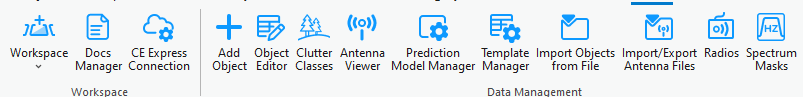
CE for ArcGIS Pro and will be found in the menu ribbon. There are 5 types of licenses and therefore 5 different tabs with various tool configurations: • RCP • RLP• EMF • Sound • Indoor This User Guide describes RLP tools.
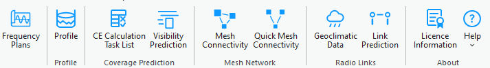
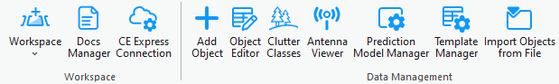
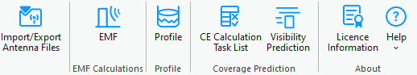
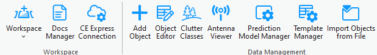
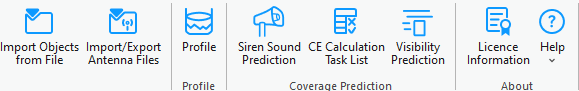

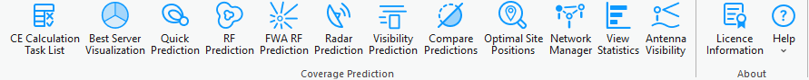
5. Geographic data
CE Desktop is designed to work with any geospatial data available to the customer and fully exploit its precision for the most accurate coverage and QoS calculations. The platform supports multi-resolution input datasets — from freely available global sources such as Sentinel-2 10 m land cover and ASTER DEM, to premium high-resolution terrain and 3D building models when provided by the customer or government agencies. Source: https://livingatlas.arcgis.com/landcoverexplorer/ By leveraging whatever data is available locally, CE Express performs nationwide calculations at the maximum feasible resolution, accurately modeling signal propagation even in dense urban environments. Support for 3D multi-height calculations ensures that coverage predictions reflect street-level, indoor, and
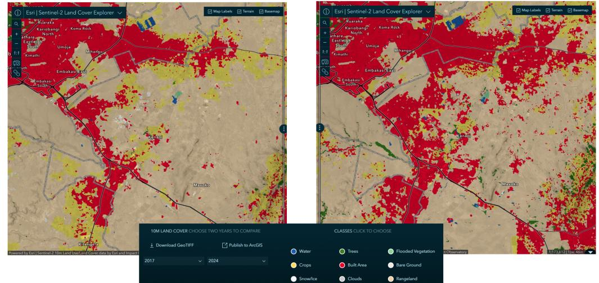
rooftop conditions, providing regulators with a realistic representation of service availability. This flexibility ensures that NRAs can use their existing GIS assets, open datasets, or commercial data they already license, turning them into actionable broadband maps without additional data procurement requirements from the solution provider. By using terrain elevation, obstacles, and clutter classification in every calculation, Cellular Expert accurately models: • Line-of-Sight and Non-Line-of-Sight Conditions – Determining diffraction, reflection, andshadowing effects over hills, valleys, and urban obstacles. • Coverage Footprints – Generating precise signal strength maps at national, regional, and local levels. • Capacity and Interference Analysis – Modeling realistic signal overlaps and interference zones for multi-operator, multi-technology environments. Diffractio Free Space Loss n Diffractio H H clutter n obstacles DSM Clutter losses UE DTM The CE tools make use of three distinct GIS data layers to obtain high precision modelling of radio wave

propagation losses:
-
Digital Terrain Model (DTM), also known as Digital Elevation Model (DEM), which describes Earth surface, i.e., path terrain profile in terms of ground elevation above uniform sea level.
-
Obstacles layer, delineating buildings and other such objects above Earth surface that may be considered to be principal impediments for radio wave propagation.
-
Clutter layer, delineating natural occurring or human cultivated ground cover that may be partially penetrable by radio waves, such as natural vegetation (e.g., forests, trees, bushes) or various crops, gardens, parks, etc. The image above illustrates how Cellular Expert uses different resolutions of topographical data to significantly improve coverage prediction accuracy. • Left image: Coverage calculated using 25 m resolution ASTER DEM data, showing a general view of signal distribution but with limited detail, especially in dense urban areas. • Right image: Coverage calculated using 1 m resolution data, revealing a much more precise propagation pattern, including building-level shadowing and accurate street-by-street coverage. More information: https://blog.maxar.com/earth-intelligence/2022/benefits-of-using-maxars-precision3d-
telco-suite-for-5g Cellular Expert can easily integrate and process 1 m or even sub-meter topographical data, providing highly detailed RF calculations. This level of precision is essential for: • Modeling 2G/3G/4G/5G, small cells and mmWave networks. • Identifying exact coverage gaps at the building and street level. • Supporting regulatory-grade broadband mapping and planning. By using high-resolution terrain and clutter data, Cellular Expert ensures that its calculations match real-
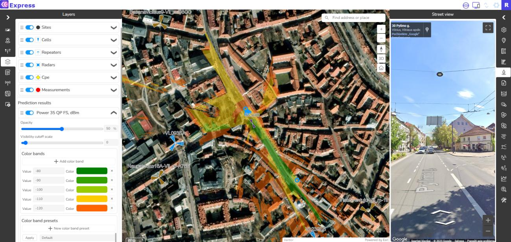
world conditions as closely as possible — resulting in better network design decisions and more reliable broadband planning outcomes.5.1 Geographic data requirements
The supported geographical data types: Only GeoTIFF is supported. Topographical data must have specific names: • The Digital terrain model must be named elevation.tif • The land use (or clutter) grid must be named clutterClasses.tif • The clutter heights (typically building, vegetation height) grid must be named clutterHeight.tif Mandatory geographical data: • Digital Terrain Model (DTM) grid All geodata must be located in one catalog.
5.1.1 Digital Terrain Model (DTM) Grid (Mandatory)
The Digital Terrain Model (DTM), also known as Digital Elevation Model (DEM), represents the Earth’s ground level above sea level. Each raster pixel has its height value. A sample DTM raster is presented below. Each pixel represents 5 square meters with its height value. In reality, within a one-pixel area, the height is not the same everywhere. Thus, the pixel’s height value is the height in its center or the maximum. The smaller the pixels, the more accurate is the grid - but also more data to calculate. 5.1.1.1 Prepare DTM raster The Digital Terrain Model (DTM) has several requirements, which are listed below. Projection The raster must use a Projected Coordinate System. To check the coordinate system of your raster, use the Properties function in ArcGIS Pro. Add the raster to your project, right-click on it, and select Properties.
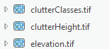
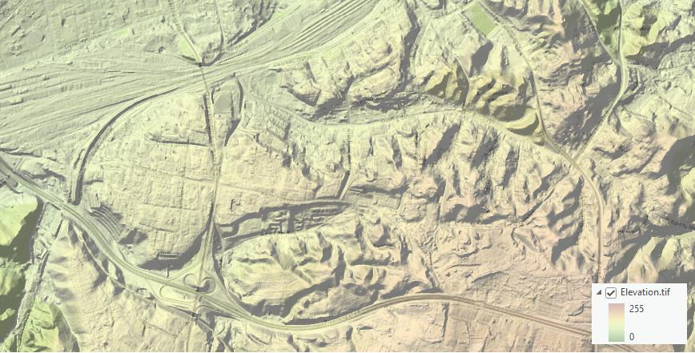
Then, go to the Source tab > Spatial Reference and check the Coordinate System type parameter to confirm it is in a Projected Coordinate System.If your raster is in a Geographic Coordinate System or needs a different projection, use the Geoprocessing

Project Raster tool to update it. In the Output Coordinate System, specify a new coordinate system. It is recommended to use a UTM coordinate system under the WGS 1984 projection.
You can find the appropriate UTM zone for your area here: https://www.arcgis.com/apps/mapviewer/index.html?layers=b294795270aa4fb3bd25286bf09edc51 Correct No Data value and raster name After setting the correct projection, assign the NoData attribute and specify the appropriate name for the
 DTM raster. To do this, use the Copy Raster tool in Geoprocessing.
DTM raster. To do this, use the Copy Raster tool in Geoprocessing.
Configure the following settings: • Input Raster: Select your newly projected DTM raster. • Output Raster Dataset: Specify the output location and set the raster name to elevation.tif. • NoData Value: Enter -9999. • Pixel Type: Choose 32-bit signed or 32-bit float. • Format: This will automatically be set to TIFF.
5.1.2 Clutter classes grid
Land use or clutter refers to the classification of the earth’s surface into categories such as urban, suburban, rural, forest, water, and open land, each of which affects radio propagation differently. Clutter data is crucial
 because it determines how signals are absorbed, reflected, or diffracted by the environment, directly
because it determines how signals are absorbed, reflected, or diffracted by the environment, directly
influencing coverage, interference, and quality of service. The naming and classification of land use types
 may vary. An example is the Sentinel-2 Land Cover dataset from the Living Atlas: Living Atlas Sentinel-2
Land Cover
This data is freely available worldwide and is detailed in Cellular Expert databases. Once the workspace is
created, a default clutter class table is automatically applied for each land use class.
may vary. An example is the Sentinel-2 Land Cover dataset from the Living Atlas: Living Atlas Sentinel-2
Land Cover
This data is freely available worldwide and is detailed in Cellular Expert databases. Once the workspace is
created, a default clutter class table is automatically applied for each land use class.
Table: These are standard clutter types in the default workspace database, which cannot be edited. You must map your clutter raster to these predefined clutter types. Standard mapping has already been configured
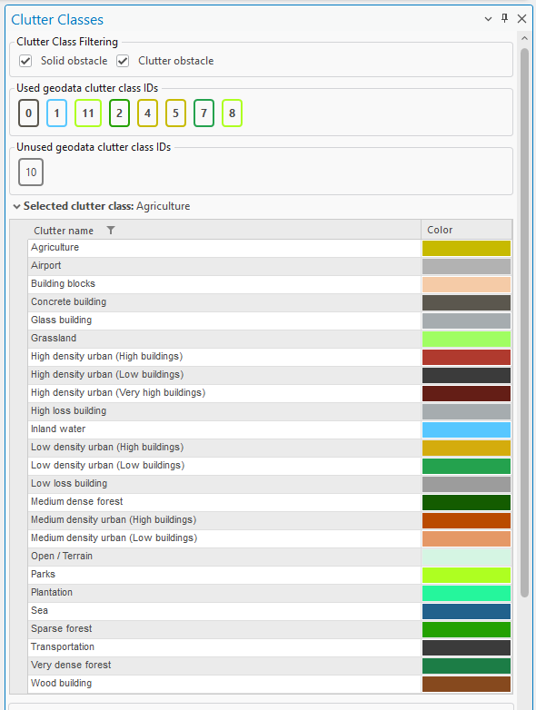
 for the Sentinel-2 Land Cover dataset from the Living Atlas: Living Atlas Sentinel-2 Land Cover
for the Sentinel-2 Land Cover dataset from the Living Atlas: Living Atlas Sentinel-2 Land Cover
If you have a different clutter class layer, it can be used for predictions by remapping it using the Clutter


 Classes tool and specifying the IDs in the geodata raster parameter. If multiple clutter classes correspond
to a single default clutter type, separate the ID values with commas.
This mapping can also be adjusted in the Clutter table.
Once clutter classes are successfully mapped, the prediction algorithms will recognize the clutter types,
apply distinct symbols, and adjust path loss calculations accordingly, based on the parameters set in the
prediction model.
Classes tool and specifying the IDs in the geodata raster parameter. If multiple clutter classes correspond
to a single default clutter type, separate the ID values with commas.
This mapping can also be adjusted in the Clutter table.
Once clutter classes are successfully mapped, the prediction algorithms will recognize the clutter types,
apply distinct symbols, and adjust path loss calculations accordingly, based on the parameters set in the
prediction model.
5.1.2.1 Prepare Clutter Classes raster The Clutter Raster has several requirements, which are the same as for DTM raster listed above. Projection It must have the same coordinate system as your elevation.tif raster. If your raster has different coordinate

 system, then use the Geoprocessing tool → Project Raster to fix it.
In the Output Coordinate System you would need to define the same coordinate system as your elevation.tif
raster. Click on Select Coordinate System button.
And choose the same coordinate system as your elevation.tif.
system, then use the Geoprocessing tool → Project Raster to fix it.
In the Output Coordinate System you would need to define the same coordinate system as your elevation.tif
raster. Click on Select Coordinate System button.
And choose the same coordinate system as your elevation.tif.
Correct No Data value and raster name After setting the correct projection, assign the NoData attribute and specify the appropriate name for the
 Clutter Class raster. To do this, use the Copy Raster tool in Geoprocessing.
Configure the following settings:
• Input Raster: Select your newly projected Clutter Class raster.
• Output Raster Dataset: Specify the output location and set the raster name to clutterClasses.tif.
• NoData Value: Enter -9999.
• Pixel Type: Choose 32-bit signed or 32-bit float.
• Format: This will automatically be set to TIFF.
Clutter Class raster. To do this, use the Copy Raster tool in Geoprocessing.
Configure the following settings:
• Input Raster: Select your newly projected Clutter Class raster.
• Output Raster Dataset: Specify the output location and set the raster name to clutterClasses.tif.
• NoData Value: Enter -9999.
• Pixel Type: Choose 32-bit signed or 32-bit float.
• Format: This will automatically be set to TIFF.
5.1.3 Clutter heights
Represents actual clutter heights, which override the default heights specified in the Clutter table. The clutter heights raster requires the accompanying clutterClasses.tif raster and cannot be used independently. A clutter height raster can be derived from a Digital Surface Model (DSM) raster and a Digital Terrain Model

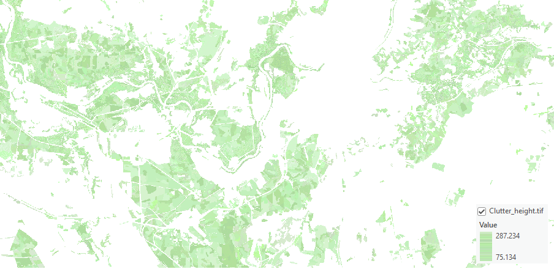
(DTM) raster using the ArcGIS Raster Calculator tool. To access this tool, open Geoprocessing tools and navigate to Spatial Analyst > Map Algebra > Raster Calculator. Use the following formula: DSM – DTMThe calculation output will be the difference between the DSM and DTM grids, representing the clutter heights. 5.1.3.1 Prepare Clutter Height raster The Clutter Height has several requirements, which are the same as for DTM raster listed above. Projection It must have the same coordinate system as your elevation.tif raster. If your raster has different coordinate
 system, then use the Geoprocessing tool → Project Raster to fix it.
system, then use the Geoprocessing tool → Project Raster to fix it.
In the Output Coordinate System you would need to define the same coordinate system as your elevation.tif raster. Click on Select Coordinate System button. And choose the same coordinate system as your elevation.tif. Correct No Data value and raster name After setting the correct projection, assign the NoData attribute and specify the appropriate name for the

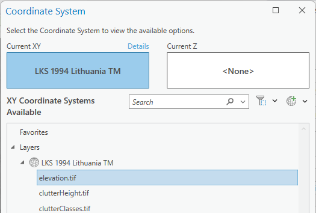
Clutter Height raster. To do this, use the Copy Raster tool in Geoprocessing.Configure the following settings: • Input Raster: Select your newly projected Clutter Height raster. • Output Raster Dataset: Specify the output location and set the raster name to clutterHeight.tif.
 • NoData Value: Enter -9999.
• Pixel Type: Choose 32-bit signed or 32-bit float.
• Format: This will automatically be set to TIFF.
• NoData Value: Enter -9999.
• Pixel Type: Choose 32-bit signed or 32-bit float.
• Format: This will automatically be set to TIFF.
5.1.4 Buildings
Building features within the Clutter Classes raster are automatically identified and categorized using a range
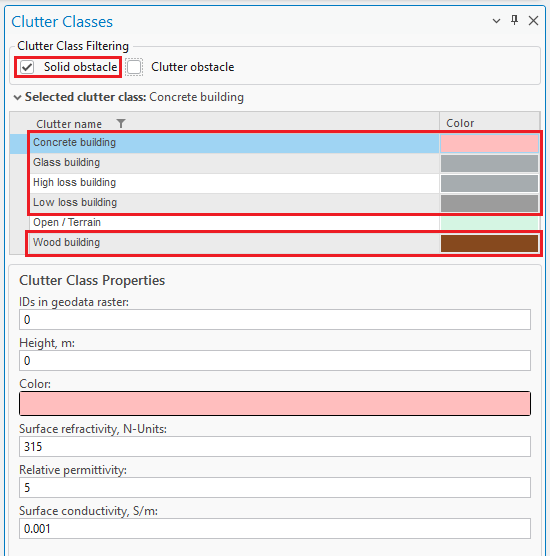
of dedicated building-specific clutter types. These clutter types are available within the Clutter Classes tool and are specifically designed to represent different architectural materials and structural characteristics. Importantly, all building-related clutter classes are treated as Solid Obstacles – ensuring accurate modeling of signal attenuation and reflection in propagation calculations. This classification enhances the realism and precision of both indoor and outdoor network predictions by accounting for the physical impact of built environments. You can seamlessly edit your Clutter Classes raster using standard ArcGIS Geoprocessing tools to integrate detailed building data into your existing clutter layer. The process supports both vector and raster input formats, giving you flexibility depending on your data source. Whether you're working with CAD-derived vectors or pre-classified raster layers, these tools allow you to enrich the clutter map with accurate building representations – essential for high-fidelity propagation modeling.If your building data is in vector format (e.g., polygons), you’ll first need to convert it to raster before

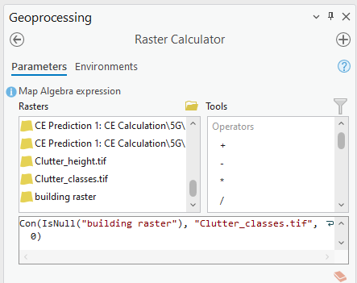
incorporating it into the Clutter Classes layer.-
Convert Vector to Raster Use the Polygon to Raster tool available in the Geoprocessing pane. This will transform your vector-based building footprints into a raster format suitable for clutter classification.
-
Update Clutter Classes Using Raster Calculator After conversion, open the Raster Calculator to integrate the new raster into your existing clutter layer: o Navigate to Geoprocessing o Go to Spatial Analyst > Map Algebra > Raster Calculator o Use map algebra expressions to merge or replace values as needed, assigning appropriate clutter class codes to building areas. Con(IsNull("building raster"), "Clutter_classes.tif", 0)
This workflow allows you to accurately reflect building data in your clutter map, improving prediction accuracy in urban and mixed-use environments. When incorporating building data into the Clutter Classes raster, you have the flexibility to assign any numeric value to represent the "Buildings" clutter class. In the example provided, a value of 0 was used, but you may choose any value – as long as it does not conflict with existing clutter class values already present in your raster. Once applied, the Clutter Classes raster will be updated to include a new entry for Buildings, enabling more precise signal propagation modeling that accounts for structural obstructions. Be sure to document your chosen value and update your Clutter Class definitions accordingly within the Clutter Classes tool to maintain consistency across your modeling environment. All propagation and prediction calculations reference clutter types defined in the Clutter Classes table. Each building-related clutter class is assigned a unique ID value, which is used during modeling to apply the appropriate path loss parameters for solid structures. This ensures that Buildings are accurately represented in simulations, contributing to more realistic signal
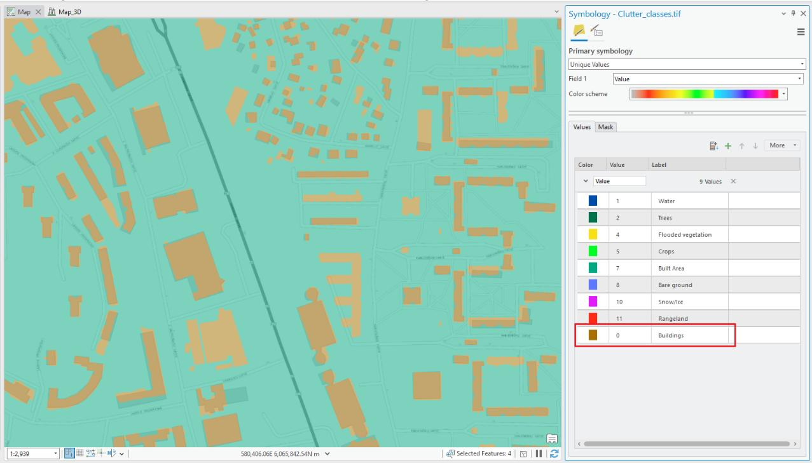
behavior in both indoor and outdoor environments.Building Height Determination in Clutter-Based Modeling Pixels assigned to a building clutter class ID will be automatically recognized as solid obstacle during

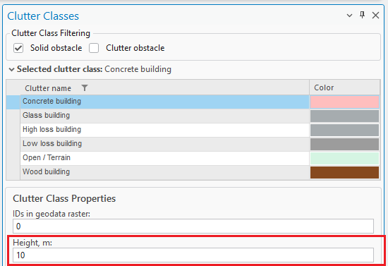
prediction calculations. Their heights are determined using the following priority: • Option 1: From the associated Clutter Height raster, if available. This provides the most accurate, location-specific height information. • Option 2: If no Clutter Height raster is present, the system will default to the height value defined in the Clutter Classes table for the corresponding clutter ID.The result:
6. Workspace
This chapter describes the Cellular Expert workspace functionality.
6.1 Workspace Tool
6.1.1 Workspace Table
Cellular Expert workspace is a geodatabase containing data tables, feature datasets, and the workspace definition table. After creating a new workspace database, the workspace definition table will be named
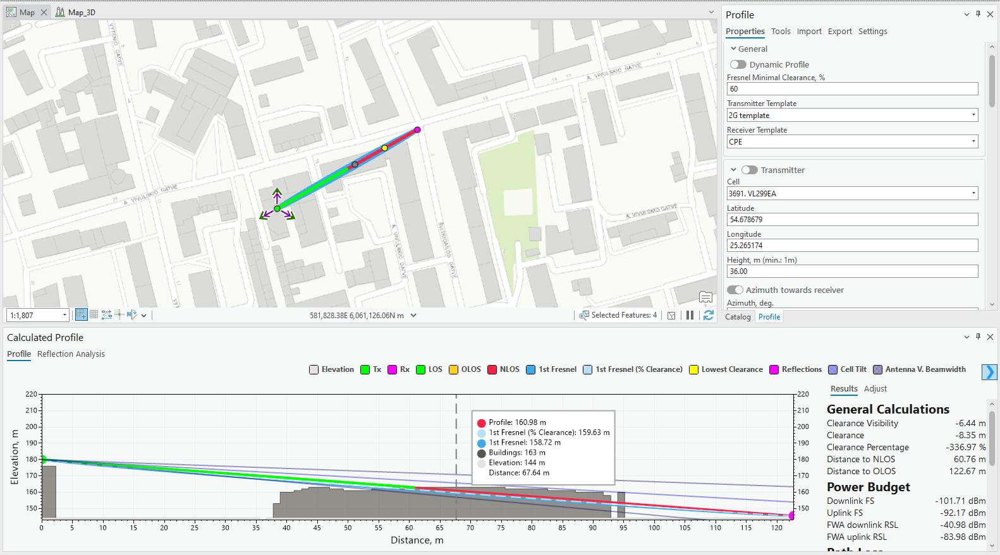
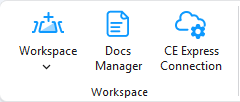
CE_WORKSPACE and contain the information about the dataset.Data field types and values: • OBJECTID – long integer type • pName – text type • pType – text type • pValue – text type When moving your project’s directory to another location (to another computer), it is necessary to update the workspace parameters by referencing the new paths to properly load the project: • Prediction Path – path for storing prediction grids • Calculation Path – path for temporary calculations • Calculation Tasks Data Path – path for saving calculation tasks • Geodata Folder Path – path for geodata (prediction models do not have geodata options, topographical

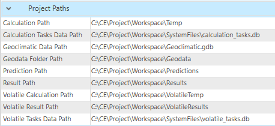
data are taken from the Geodata Folder Path) • Result Path – path for final results Workspace calculation paths and settings can be previewed in the dedicated tool, navigate to WorkspaceProperties. It would show all parameters listed in CE_WORKSPACE table.
6.1.2 Create Workspace
Steps to create a new workspace:
-
Click the Create button in the Cellular Expert Workspace menu.
-
The Create dialogue will appear. Fill in the minimum required data: New workspace path It is automatically filled based on the ArcGIS Pro project location. The recommendation is to first save your
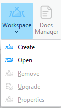
 ArcGIS Pro project, and then open the Workspace > Create tool. The project's workspace folder will be
automatically created in the ArcGIS Pro project location catalog. This way, you will have both the ArcGIS
Pro and CE workspace in the same location.
Geodata folder path
Catalog where geodata files are stored. More about Geodata requirements are listed in 5. Geographic
data topic. Click on Browse button to define Geodata catalog. Geodata must have specific names:
• The Digital terrain model must be named elevation.tif
• The land use (or clutter) grid must be named clutterClasses.tif
• The clutter heights (typically building and vegetation height) grid must be named
clutterHeight.tif
ArcGIS Pro project, and then open the Workspace > Create tool. The project's workspace folder will be
automatically created in the ArcGIS Pro project location catalog. This way, you will have both the ArcGIS
Pro and CE workspace in the same location.
Geodata folder path
Catalog where geodata files are stored. More about Geodata requirements are listed in 5. Geographic
data topic. Click on Browse button to define Geodata catalog. Geodata must have specific names:
• The Digital terrain model must be named elevation.tif
• The land use (or clutter) grid must be named clutterClasses.tif
• The clutter heights (typically building and vegetation height) grid must be named
clutterHeight.tif
Note: The projected Coordinate System has been filled automatically and taken from the defined Elevation grid. This means that this coordinate system will be assigned to your project feature layers. When creating a new workspace using geodata containing clutter classes raster, default class IDs can now be set by clicking Set Default Clutter Class IDs button. The default ID values are based on Living Atlas clutter. Clutter class IDs can also be set manually, either before or after the default values are set. To initiate
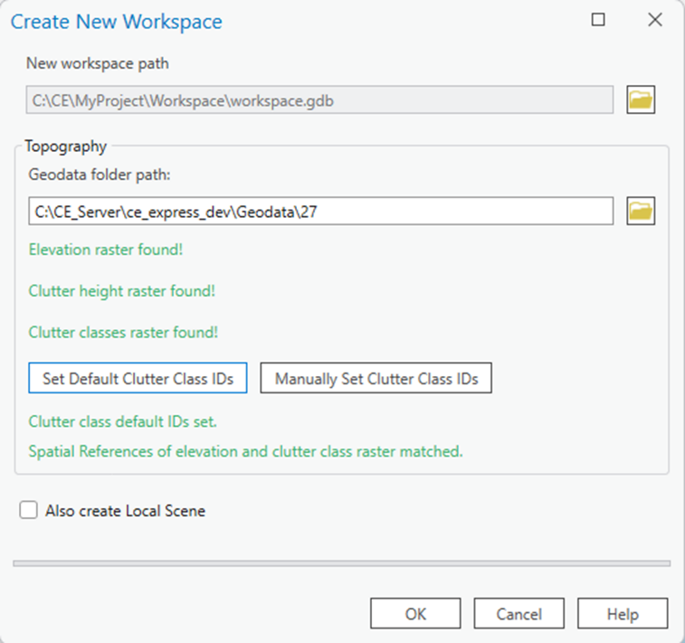
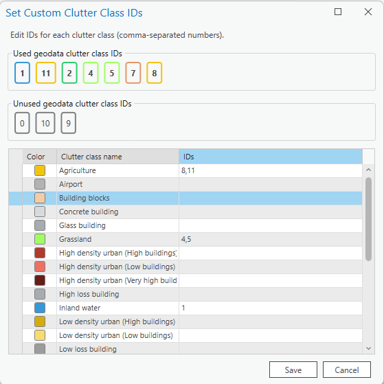
the manual editing of clutter class IDs, click the Manually Set Clutter Class IDs button. Each clutter class can be edited to designate its used and unused types, also indicated by their distinct colors.Note: The projected Coordinate System has been filled automatically and taken from the defined Elevation
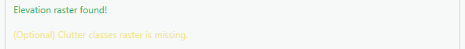

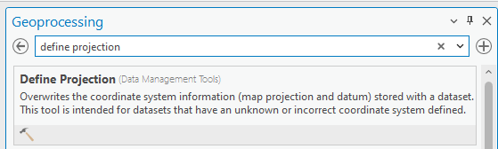
grid. This means that this coordinate system will be assigned to your project feature layers. Several messages related to Geodata: • If only Elevation exists in Geodata catalog, then tool will be filled with such information: Clutter Classes and Clutter Height are optional. • If coordinates mismatch between elevation and clutter, then it will provide this message: Please close Workspace Create tool and fix your geodata. You can use Geoprocessing tools, Define Projection tool to fix this issue. Define the same coordinate as elevation.tif for your clutterClasses.tif and if available, clutterHeight.tif rasters. Also Create Local Scene Use the option to create a second scene for 3D visualization.
- Press OK button to start workspace creation procedure. Cellular Expert layer and geodata will be added to the project.
Workspace geodatabase and required folders will be created within successful workspace creation

 procedure.
procedure.
The Project Paths will be filled in the Workspace Properties → Properties tab.
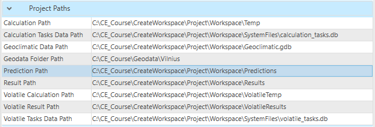
6.1.3 Open Workspace
Steps to open a workspace:
-
Click the Open option in the Workspace menu of the Cellular Expert toolbar.
-
Specify the workspace name and click the OK button. The specified workspace will be activated automatically.
6.1.4 Remove Workspace
Upon selecting Remove in the Workspace dropdown menu, the workspace will be removed from the currently open ArcGIS Pro project.
6.1.5 Workspace Upgrade
Workspace Upgrade is a tool that enables the user to update missing tables from the default database (default.gdb). If the table exists, Workspace Upgrade also checks if all default fields are present in that table. If the tables are toggled, they will be updated (upgraded) by the tool. Usually, with new versions of CE for ArcGIS Pro come changes to default data tables. This tool is especially
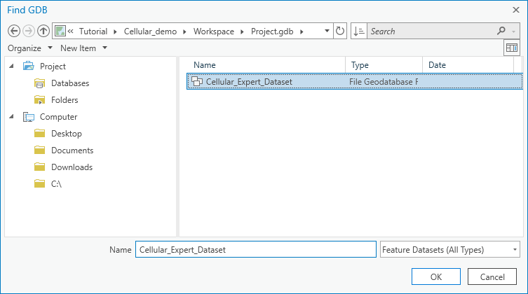
useful when checking if the newest version tables correspond to the current project tables. Workspace Upgrade automatically checks all these parameters and notifies the user upon the start-up of the project.| Parameter | Description |
|---|---|
| Reimport Antennas | Imports the deleted default antennas back to the Antennas table. |
| Generate Antenna Type | Based on the Antenna data assign antennas a type if they are missing it. |
| Run Analysis | Manually checks if the default tables and their fields exist in the project. |
| Upgrade Database | |
| Creates the missing tables and/or creates/adds back the missing fields from default tables. | |
| If a project with incompatible geodata is loaded, the Workspace Upgrade tool analyzes the current geodata, |
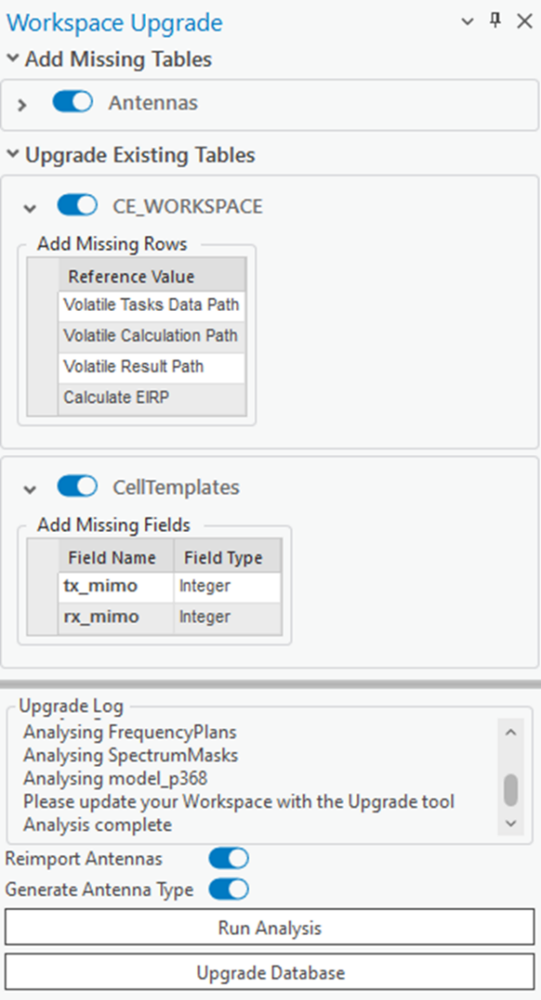
as well as the owned user Esri Extension licenses to offer the optimal geodata upgrade path. This process is one-time only, and can be done by checking the Upgrade Geodata toggle. • If only elevation and buildingHeight rasters exist, the buildingHeight can automatically be renamed to clutterHeight. • (Image Analyst and Spatial Analyst licenses only) If elevation, buildingHeight and clutterHeight rasters exist, raster calculations are performed to merge the buildingHeight and clutterHeight rasters. • (Image Analyst and Spatial Analyst licenses only) If elevation, buildingHeight, clutterHeight andclutterClasses rasters exist, raster calculations are performed to merge the buildingHeight and clutterHeight rasters, and modify the clutterClasses raster to add the building outlines with ID of 0.
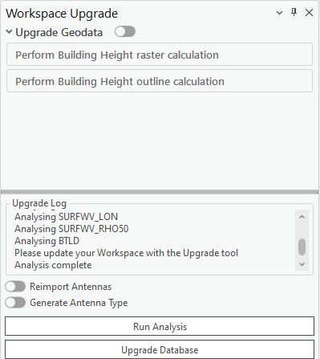
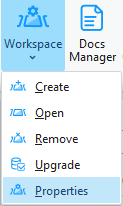
6.1.6 Workspace Properties
The Workspace properties dialogue shows all the workspace information from the “CE_WORKSPACE” data table. It also enables the user to customize the symbol visualization. To open the Workspace Properties dialogue, click on the Workspace menu icon and choose Properties.
6.1.6.1 Parameters All information from the “CE_WORKSPACE” table is represented in the Parameters tab of the Workspace
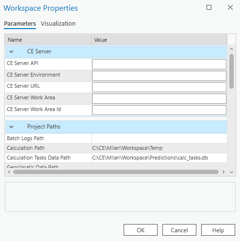
Properties. | Parameter | Description | |---|---| | OK | Click this button to save any changes and close the dialogue. | | Cancel | Click this button to cancel any changes and close the dialogue. | | Help | Get helpful information about the dialogue. | CE Server Parameters ArcGIS Portal URL Connection URL to the ArcGIS Portal website. CE Server API Connection URL to Cellular Expert Server API.| Parameter | Description |
|---|---|
| CE Server Environment | Cellular Expert Server environment in which it is run. |
| CE Server URL | Connection URL to Cellular Expert Server. |
| CE Server Workspace | The workspace used in the Cellular Expert Server. |
| CE Server Workspace ID | The ID of the workspace which is used in the Cellular Expert Server. |
| Project Paths Parameters | |
| Parameter | Description |
| --- | --- |
| Calculation Path | Path for temporary calculation results. |
| Calculation Tasks Data Path | Path for the calculation results that will be displayed in the Calculation Task List. |
| Geodata Folder Path | Path to a folder in which the geodata from the Cellular Expert Workspace is stored. |
| Prediction Path | Path for storing prediction grids. |
| Result Path | Path for storing the final calculation results |
| Volatile Calculation Path | Path for temporary Quick Prediction calculation results. |
| Volatile Result Path | Path for storing the final Quick Prediction calculation results |
| Volatile Tasks Data Path | Path for the Quick Prediction calculation results that will be displayed in the Calculation Task List. |
| Project Settings Parameters | |
| Calculate EIRP | |
| Determines whether calculate EIRP or no in the prediction calculations. | |
| • Value YES. EIRP will be calculated based on Power, Antenna Gain and Misc. Loss values. | |
| • Value NO. EIRP will be taken as single value defined in Power field. | |
| Enable GPU Acceleration | |
| Enables GPU Accelerations that optimizes the prediction calculations and makes them run faster. Possible | |
| values Yes/No. | |
| Transmit Power Units | |
| Represents power value in dBm or Watts. |
Receiver/Transmitter Height Reference The reference raster for calculating the receiver’s and transmitter’s height for these calculations: Profile, RF
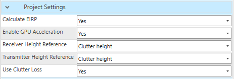
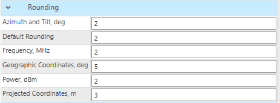
Predictions, Quick Predictions, Visibility and other prediction tools. Possible values: • Elevation – reference layer will be used elevation.tif raster. This is a default parameter. • Clutter height – reference layer will be used clutterHeight.tif raster. Receiver/transmitter height will be calculated over Clutter Height raster. clutterHeight.tif raster is a must to enable this parameter. • Clutter height (buildings only) – Height reference is calculated using the Building class from the clutterClasses.tif raster. The Building class is defined in the Clutter Class dialog and linked to a specific clutter class ID in the clutterClasses.tif raster. • Absolute – receiver and/or transmitter’s absolute height (relative to sea level) will be used in relevant calculations. Use Clutter Loss Determines whether clutterClasses.tif and clutterHeight.tif rasters are used in prediction calculations. Possible values Yes/No. Rounding The rounding value for different parameters. 6.1.6.2 Visualization The Cellular Expert network objects (Sites, Cells, OMEN) and calculation result rasters are represented in ArcGIS with the symbology as defined in the .lyr files, located in the Visualization tab (“CE_LAYERS” table).OK Click this button to save any changes and close the dialogue. Cancel Click this button to cancel any changes and close the dialogue. Help Get helpful information about the dialogue. All visualization settings have the “Visible” option set to On by default. Suppose the Visible option is set to off, the next time a relevant calculation is performed. In that case, the rasters associated with the calculation
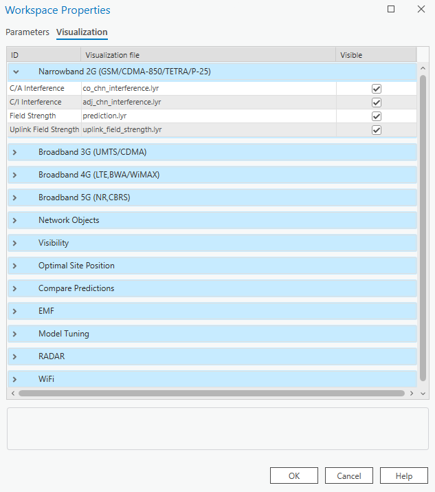
are added to the map with the visibility disabled. This is done only for the calculations performed after the setting is changed, and does not impact already added rasters on the map. The symbology is defined as a list of Layers and .lyr files: • Narrowband 2G (GSM/CDMA-850/TETRA/P-25) – second generation network (like GSM) calculationsor technology-independent calculations (for example, the symbology for antenna loss by tilt is defined by the same file for WiMAX, LTE, and other technology) • Broadband 3G (UMTS/HSDPA) – results for UMTS, HSDPA and other 3 - 3.5 generation technologies • Broadband 4G (LTE, BWA/WiMAX) – results of LTE technology calculations • Broadband 5G (NR, CBRS) – results of 5G-NR technology calculations • Network objects – Sites, Cells, OMEN • Visibility – results of Visibility Calculations • Optimal Site Position – results of optimal site positioning. • Compare predictions – the results of comparing several predictions. • Model Tuning – results of model calibration • Radar – results of radar coverage calculations • Wi-Fi – results of Wi-Fi coverage calculations For example, the layer 4G Downlink Throughput with defined path dl_ul_throughput.lyr means that the 4G downlink bitrate prediction raster will be represented in ArcGIS using the symbology file …/Cellular Expert/Layers/dl_ul_throughput.lyr Note: if you change the symbology with ArcGIS tools, it will be saved only in the current ArcGIS project. So, when you re-open the same Cellular Expert workspace in another ArcGIS project, the symbology will be defined in the Visualization tab of the Workspace Properties dialogue. To create a new visualization and locate it in the Workspace Properties: • Right-click on the layer with the modified symbology (for example Sites) in the ArcGIS Table Of Contents • Choose Sharing > Save As Layer File… from the opened menu • Save the file with a given name (for example Sites_my_symbol.lyrx) • Copy/Paste it to C:\Program Files\Cellular Expert\Layers • Open the Cellular Expert workspace in which you want to use your symbology • Open the Workspace Properties dialogue and select the Visualization tab • Select the row with the corresponding layer name (for example Sites) • Click the browse button and locate your layer file (for example “C:\Program Files\Cellular Expert\Layers\Sites_my_symbol.lyrx”) which contains the modified symbols. Press the OK button. • The symbology for the Cellular Expert network objects (Sites, Cells, OMEN) will be applied to the layers when you open the workspace next time. To see the changes immediately re-open the workspace (close it using the Remove option and open it again with the Open option from the workspace menu) The new symbology will be uploaded and remain assigned to the workspace database independently of the ArcGIS project file. When you use layer files for visualization, do not forget about them. Remember that when you move your workspace to another location, the location path settings can become incorrect. If Cellular Expert is not able to find your defined symbology file, it will use the default file from the location .../Cellular Expert/Layers.

6.2 Docs Manager
Docs Manager is a tool for managing Saved Profiles between the transmitter (Tx) and receiver (Rx), which are generated in the Profile tool, as well as saved Link Prediction results, Profile Reports, and Link Prediction Reports. When a profile is saved in the Profile tool, it is automatically stored in Docs Manager,

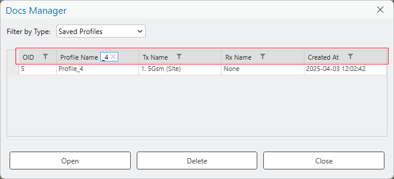
allowing users to reopen it at any time. This ensures that all parameters and calculations related to Tx and Rx are preserved for future reference, eliminating the need to reconfigure settings repeatedly. The same applies for Link Prediction results, and the Reports can be opened if the original exported document is, for example, deleted from Desktop or other saved location. How to Find a Saved Profile Use the filter option for each field to quickly locate the required profile from the list. How to Open a Profile A saved profile can be accessed in two ways:-
Double-click on the desired profile.
-
Select the profile and click Open.
Additional Functions • Delete: Removes the selected profile. • Close: Closes the Docs Manager dialog. By using Docs Manager, users can efficiently store and retrieve profiles, ensuring consistency and accuracy in their Tx and Rx calculations. How to Open a Link Prediction A saved Link Prediction, just like Profile, can be accessed either by double-clicking the desired Link
 Prediction result, or by select it and clicking Open.
Prediction result, or by select it and clicking Open.
How to Save a Link Prediction Link Prediction result can be saved to Docs Manager by selecting Save result to Docs Manager in
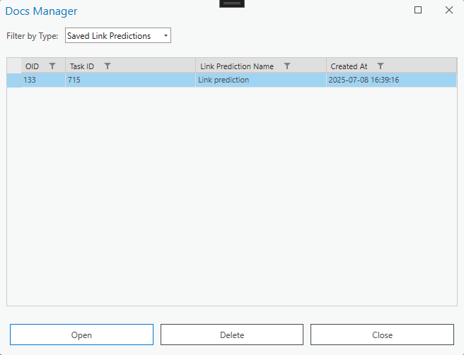
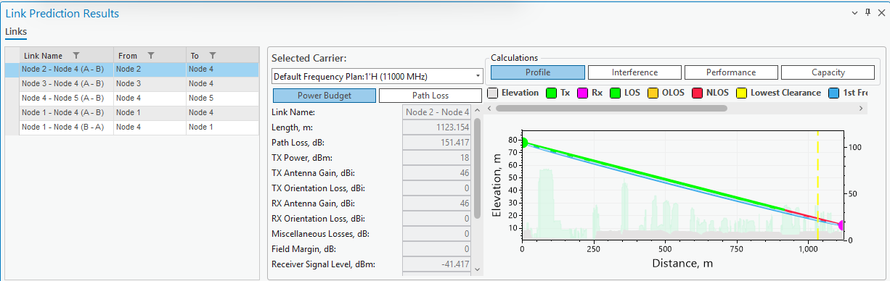
the Link Prediction tool.How to Open a Profile Report A Profile Report document can be accessed either by double-clicking the desired Profile Report, or by
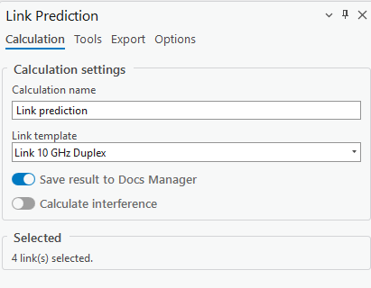
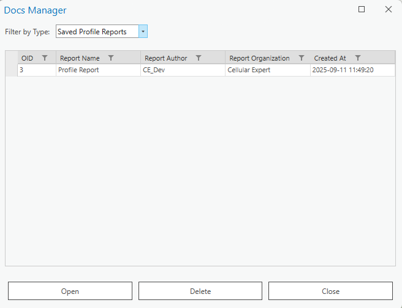
select it and clicking Open. The document will be opened using your default PDF document reader. How to Save a Profile Report Profile Report of the current drawn profile can be saved to Docs Manager by selecting Save result to Docs Manager in the Export tab of the Profile tool.How to Open a Link Prediction Report A Link Prediction Report document can be accessed either by double-clicking the desired Link Prediction Report, or by select it and clicking Open. The document will be opened using your default
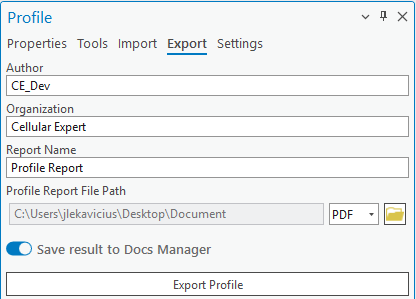
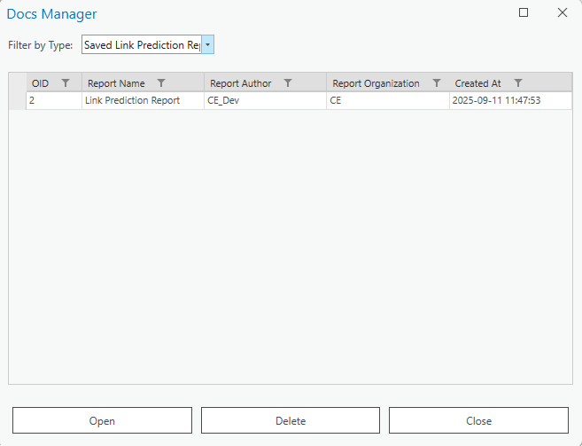
PDF document reader. How to Save a Link Prediction Report Link Prediction Report can be saved to Docs Manager by selecting Save result to Docs Manager in the Export tab of the Link Prediction tool.6.3 CE Express Connection
CE Express Connection is a tool that lets you establish a connection between the CE Express database and CE for ArcGIS Pro. When the connection is established, data can be retrieved from CE Express and uploaded to CE for ArcGIS Pro workspace. For the connection to be established you must have access to ArcGIS Portal and have a valid CE Express URL.
6.3.1 Properties
Click the button and select the Properties tab to open the CE Express Connection dialogue. To connect to CE Server Express and get the list of workspaces, insert the Server URL in the corresponding field. Then press the Get Workspaces button. If you select one of the appearing workspaces, the properties of that workspace will be saved to your current
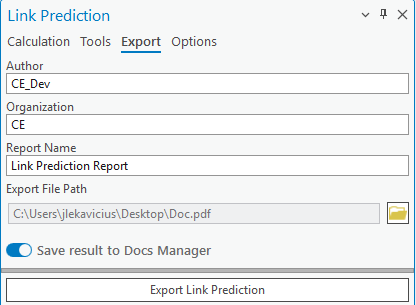
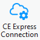
ArcGIS Pro project automatically.| Parameter | Description |
|---|---|
| Server URL | The URL to the CE Express database where the workspaces will be located. This parameter must be defined to connect to the database. |
| Server ArcGIS Portal URL | The URL to your organization’s ArcGIS Portal (filled in automatically). |
| Server API URL | The API is used in the connection process (filled in automatically). |
| Selected Workspace | The list of all workspaces was retrieved from the CE Express Database. |
| Get Workspaces | |
| Establishes the connection between the provided Server URL and CE for ArcGIS Pro. Upon clicking the | |
| button, the user may be redirected to a browser window in which he will have to log in to the ArcGIS Portal. |
 After doing so, the workspaces will be retrieved.
Import Features
Imports the retrieved objects to the currently opened CE workspace.
After doing so, the workspaces will be retrieved.
Import Features
Imports the retrieved objects to the currently opened CE workspace.
7. Data Management
7.1 Network Objects
Cellular Expert network objects are: Sites – represent the geographical location of a radio station. They are identified by the unique site ID and
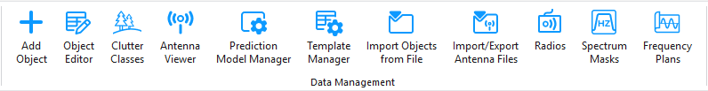
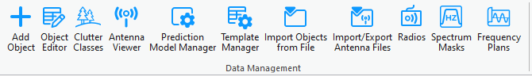
contain information about the geographical coordinates, ground altitude, and base height. Links – represents a radio connection between a transmitter and a receiver. It can be established between the selected transmitter and receiver. The link operates at a fixed frequency from the transmitter's carriers list. With the data management tools located in the Data Management section, you can view and edit the Cellular Expert network objects. Note: most of these tools work only in editing sessions on the currently active workspace.7.2 Add Object
New network objects can be created in several ways. They can be: • Imported using the CE for ArcGIS Pro functionality • Created with Cellular Expert tools from zero (define all parameters in the process) • Created from templates
7.2.1 Add Site
The object represents Tower or Site location. It has several parameters, such as Site Name, coordinate or height. It is used only in 4G or 5G carrier aggregation calculation, when Total Downlink Throughput is calculated.
-
Choose the button from the toolbar and select Sites from the dropdown list.
-
Define the location of the new Site by pressing the mouse left button on the map. The new Site
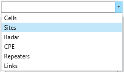

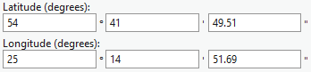
will be placed right in that location. The Site object can be created by entering exact coordinates in: • Latitude (degrees) and Longitude (degrees) section. • Latitude and Longitude• X and Y (projected coordinate system)
- Define Site name and press Save Changes to save object to the database. Save Changes Creates the object with the given parameters. Dismiss Cancels object creation and closes the dialogue. Site Properties | Parameter | Description | |---|---| | Name | Site identification. | | Latitude (degrees) | Latitude degrees, minutes, and seconds Y type coordinate in the WGS 1984 geographical coordinate system. | | Longitude (degrees) | Longitude degrees, minutes, and seconds X type coordinate in the WGS 1984 geographical coordinate system. | | Latitude | Decimal degrees Y type coordinate in the WGS 1984 geographical coordinate system. | | Longitude | Decimal degrees X type coordinate in the WGS 1984 geographical coordinate system. | | X | Coordinate in the projected coordinate system. | | Y | Coordinate in the projected coordinate system. | | Z | 3D dimensions representing an object's height above sea level, used for visualizing objects in a 3D scene. | | Height Above Ground | Object’s height above the terrain. | | Ground Altitude | Ground elevation above sea level at the network object's location. |
7.2.2 Add Link
The object represents a Microwave link that holds all the information about frequencies, antennas, radio equipment, etc. Object type is a line feature class. Choose the button from the toolbar and select Links from the dropdown list. Define the location for the new Link by left-clicking on the map and selecting two distinct points, or two
existing Sites. The new Link will be created as a geometry between those two points.
Save Changes Creates the object with the given parameters. Dismiss Cancels object creation and closes the dialogue. Link Parameters Site (A, B) Sites that have been assigned for the transmitter and receiver points of the link. If upon link creation no
sites were assigned, new sites will be created and assigned to the link. Latitude (degrees A, B) Latitude degrees, minutes, and seconds Y type coordinate in the WGS 1984 geographical coordinate system. Longitude (degrees A, B) Longitude degrees, minutes, and seconds X type coordinate in the WGS 1984 geographical coordinate system. Latitude (A, B) Decimal degrees Y type coordinate in the WGS 1984 geographical coordinate system.
| Parameter | Description |
|---|---|
| Longitude (A, B) | Decimal degrees X type coordinate in the WGS 1984 geographical coordinate system. |
| X (A, B) | Coordinate in the projected coordinate system. |
| Y (A, B) | Coordinate in the projected coordinate system. |
| Z (A, B) | 3D dimensions representing an object's height above sea level, used for visualizing objects in a 3D scene. |
| Height (A, B) | Object’s height above the terrain. |
| Azimuth (A, B) | Direction from the North in degrees. |
| Tilt (A, B) | Mechanical tilt in telecommunications repeaters is the physical angling of the antenna to optimize signal coverage. |
| Link Name | Link identification. |
| Template | The template will fill all empty or not specified fields with default values that are not necessary for predictions. 7.2.2.1 Frequency Plan |
| Band (A, B) | Specifies whether the transmitter operates in Upper or Lower frequencies. Additionally, if the link type is duplex, we also determine the receiver band. |
| Radio Model | The radio equipment parameters which are assigned to the Link. |
| Duplex | Specifies whether the signal can be transmitted and received simultaneously. Changing the duplex mode will affect the carrier selection. |
| Frequency Plan | Frequency plan that is applied to the link. Changing the frequency plan will affect the carrier selection |
| Carrier Selection | |
| Carriers that will be assigned to the created Link. Carriers must be selected for the link to be created. If | |
| duplex mode is enabled, the user will be able to edit both Upper and Lower band carriers. Also, selecting | |
| one carrier will result in the selection of both Upper and Lower carriers based on their ID. | |
| Protection configuration | |
| 1+1 or M:N protection configuration. | |
| Based on the selected protection configuration the following transmitter and receiver switching schemes |
are displayed: Link configuration Tx combining Rx combining Hot standby Combining/Switching 1+1 Switching Combining/Switching 1:1 Switching Switching M:N Diversity Can be the following: space, frequency, space and frequency with two or four receivers, and angle diversity.
To define diversity options (antenna or frequency separation values) use the Diversity properties command. For space diversity options, the antenna can be selected, as well as the parameters for vertical separation (in meters), gain of diversity antenna, and misc. loss (in decibels).
Protection and diversity improvement calculation algorithms are provided in Cellular Expert Technical Reference. Apply parameter settings to duplex link If toggled, saves the receiver band carrier parameters to the transmitter band carrier parameters, overwriting any changes that were made to the selected carriers. Read more about Frequency Plans in Frequency Plans. 7.2.2.2 Antenna | Parameter | Description | |---|---| | Antenna (A, B) | Antenna name, parameters, and patterns for predictions. | | Misc Loss (Optional) | Miscellaneous loss value in dB. | | View Antenna | Opens the Antenna Viewer with the corresponding antenna patterns. Read more about antennae in Antenna Viewer . 7.2.2.3 Equipment | | Spectrum Mask | Mask form for selected carriers. | | Radio Model | The radio equipment parameters which is assigned to the Link. | View Mask Opens the Spectrum Masks with the selected spectrum mask patterns. Read more about equipment in Radios, Spectrum Masks. 7.2.2.4 Prediction Models Read more about prediction models in Prediction Model Manager. This tab lets the user select which prediction model and configuration should be used for calculations. 7.2.2.5 Performance Objectives Performance Objectives Opens a dialog for the assignment of individual performance objectives for the current link. It allows for defining availability and performance objectives. Predefined performance objectives are related to the radio links under analysis.
The first group of objectives is annual availability objectives for multipath, rain, and equipment. Total availability is recalculated automatically as a sum after entering objectives for multipath, rain, and equipment. The objectives are expressed as a percentage over the average year, separately for one-way and two-way paths, for single hop, and end-to-end radio paths. The other group of objectives is performance objectives. There are two kinds of performance objectives • Individual - prescribed for a given link • Common - valid for all links subjected to the prediction procedure Such a framework enables the evaluation of one group of performance objectives for a whole radio link network, together with specialized objectives for separate parts of a network. Individual performance objectives are accessible only when the performance objectives dialog is launched from the selected link's properties dialog. To create a new performance objective, first select the required performance parameter, the target defining an objective for this parameter, and finally, the condition which applies to a given link, or a group of links.
Add the performance objective by pressing the button. To delete the objective, select it in the table and press the button respectively. Value If the value of a given performance objective depends on the path length of a link, it can be represented by the value Show Factor If the value of a given performance objective depends on the path length of a link, it can be represented by a multiplication factor as a formatted string.
7.2.3 Add Mesh Node
The object represents a node used in mesh network calculations and serves as an endpoint for Link objects.
It includes several configurable parameters such as name, geographic coordinates, height, maximum number of connections, group affiliation, and additional technical attributes. Choose the button from the toolbar and select MeshNodes from the dropdown list. Define the location of the new Mesh Node by pressing the mouse left button on the map. The new Mesh Node will be placed right in that location.
The Mesh Node object can be created by entering exact coordinates in: Latitude (degrees) and Longitude (degrees) section. Latitude and Longitude X and Y (projected coordinate system) Define Mesh Node name and press Save Changes to save object to the database. Save Changes Creates the object with the given parameters. Dismiss Cancels object creation and closes the dialogue. Mesh Node Properties | Parameter | Description | |---|---| | Name | Mesh node identification. | | Status | Mesh node status. | | Latitude (degrees) | Latitude degrees, minutes, and seconds Y type coordinate in the WGS 1984 geographical coordinate system. | | Longitude (degrees) | Longitude degrees, minutes, and seconds X type coordinate in the WGS 1984 geographical coordinate system. | | Latitude | Decimal degrees Y type coordinate in the WGS 1984 geographical coordinate system. | | Longitude | Decimal degrees X type coordinate in the WGS 1984 geographical coordinate system. |
| Parameter | Description |
|---|---|
| X | Coordinate in the projected coordinate system. |
| Y | Coordinate in the projected coordinate system. |
| Z | 3D dimensions representing an object's height above sea level, used for visualizing objects in a 3D scene. |
| Height Above Ground | Object’s height above the terrain. |
| Ground Altitude | Ground elevation above sea level at the network object's location. |
| Frequency, MHz | Frequency of the mesh node. |
| Antenna | Define antenna patterns for the mesh node object. |
| Power, dBm | Power value of the mesh node. |
| Misc Loss, dB | Miscellaneous loss value of the mesh node. |
| Misc Loss, dBm | Sensitivity value of the mesh node. |
| Type | Type of the mesh node (text description). |
| Max connections | The maximum number of connections the mesh node can have (used for mesh connectivity calculations). |
| Layer | The layer of the mesh node (number value). Used for priority calculations in Automatic Frequency Planning. |
| Group name | The group name of the mesh node (text description). Several mesh nodes may belong to the same group. |
| Prediction model | The prediction model that will be used for the mesh node in Mesh Connectivity and Quick Mesh Connectivity calculations. The default selection is LOS ITU-R P.525 (6GHz – 100GHz) – Default. |
7.3 Object Editor
The Object Editor enables the user to make changes to a network object after it is created and placed on the map.
Choose the button to open the Object Editor dialogue. Select objects by navigating to the ArcGIS Pro Edit → Selection section and choosing the Select tool. The selected objects will appear in the Object Editor in a tree hierarchy. To edit one of the selected objects, left-click on that object and the corresponding editing menu will open
below the list.
Delete Object Select and right-click any network object from the selection, then choose the Delete option from the popup. Duplicate Object Select and right-click any object from the selection, then choose the Duplicate option from the popup. The duplicated object will retain all information from the original object including coordinates/meridians. If you
want to duplicate objects and change their coordinates/meridians at the same time, use the separate Duplicate Objects button from above the selection tree.
7.3.1 Move Link Objects
Choose the button to open the Object Editor dialogue. Select the desirable Link objects with the
 Select tool and press the Move Objects button in the Object Editor.
The Links object has Transmitter parameters.
And Receiver parameters.
Select tool and press the Move Objects button in the Object Editor.
The Links object has Transmitter parameters.
And Receiver parameters.
The location of Transmitter and Receiver can be changed: • By defining exact coordinates in Transmitter and Receiver section. • Using Select Tx and Select Rx buttons. If new location is defined, then potential link will be visible on the map.

By pressing Save Changes, Link and Site objects will be moved. Save Changes Saves the changes to the objects. Dismiss Cancels the changes to the objects and closes the dialogue.
7.3.2 Duplicate Link Objects
Choose the button to open the Object Editor dialogue. Select the Link object with the Select tool and
press the Duplicate Objects button in the Object Editor dialogue. The Links object has Transmitter parameters.
And Receiver parameters.
The location of Transmitter and Receiver can be changed: • By defining exact coordinates in Transmitter and Receiver section. • Using Select Tx and Select Rx buttons. If new location is defined, then potential link will be visible on the map.

By pressing Save Changes, Link and Site objects will be duplicated. Save Changes Saves the changes to the objects. Dismiss Cancels the changes to the objects and closes the dialogue.
7.3.3 Move Site (Point) Objects
Choose the button to open the Object Editor dialogue. Select the desirable objects with the Select
tool and press the Move Objects button in the Object Editor.
There are multiple ways to move objects: • If multiple objects are selected, the move objects display will show the geospatial properties of the
center point between the objects denoted as the “Cursor point”.
The "Cursor Point" functions as a reference marker depicted by a red dot on the map. This marker is centrally located among the objects on the map and shows where the cursor was placed. You can adjust the position of the Cursor Point either by entering new coordinates directly or by clicking “Select Point” and
choosing a different location on the map. When you move the Cursor Point, all the objects on the map will shift their position to maintain their relative distances from this central point. • If a single point object is selected or several objects at the same location, the move objects display
will show the geospatial properties of these objects denoted as “Cursor Point”. If a single point object is selected on the map, the "Cursor Point" serves as its positional anchor. Positioned
as a red dot, the Cursor Point represents the current coordinates of the selected object and shows where the cursor was last placed. You can alter the location of the selected object by manually updating the Cursor Point's coordinates or by clicking “Select Point” and choosing a new location on the map. Any movement of the Cursor Point will directly translate the selected object to the corresponding new location while keeping its spatial relationship with the Cursor Point consistent.
Save Changes Saves the changes to the objects. Dismiss Cancels the changes to the objects and closes the dialogue.
7.3.4 Duplicate Site (Point) Objects
Choose the button to open the Object Editor dialogue. Select the object with the Select tool and
press the Duplicate Objects button in the Object Editor dialogue.
There are multiple ways to duplicate objects: • If multiple objects are selected, the duplicate objects display will show the geospatial properties of
the center point between the objects denoted as the “Cursor point”.
The "Cursor Point" functions as a reference marker depicted by a red dot on the map. This marker is centrally located among the objects on the map and shows where the cursor was placed. You can adjust the position of the Cursor Point either by entering new coordinates directly or by clicking “Select Point” and
choosing a different location on the map. When you move the Cursor Point, all the objects on the map will shift their position to maintain their relative distances from this central point. • If a single point object or several objects on the same location are selected, the duplicate objects display will show the geospatial properties of that object denoted as “Cursor Point”.
If a single point object is selected on the map, the "Cursor Point" serves as its positional anchor. Positioned
as a red dot, the Cursor Point represents the current coordinates of the selected object and also shows where the cursor was last placed. You can alter the location of the selected object by manually updating the Cursor Point's coordinates or by clicking “Select Point” and choosing a new location on the map. Any movement of the Cursor Point will directly translate the selected object to the corresponding new location while keeping its spatial relationship with the Cursor Point consistent.
Save Changes Duplicates the objects. Dismiss Cancels the changes to the objects and closes the dialogue.
7.4 Clutter Classes
The Clutter Classes tool is designed to manage categories describing different types of environments in telecommunication networks. It relies on the Clutter Classes raster used in the project. The raster values
must match the ID values in the Clutter Classes dialog. For example, if "Trees" has a value of 2 in the Clutter Classes raster, this ID must be defined in the Clutter Classes tool. By default, ESRI’s Sentinel-2 Land Use values are used after workspace creation: ESRI Sentinel-2 Land Cover Here is the table view of Clutter table, which comes with default database.
Sentinel-2 clutter classes raster provides information about these classes:
Choose the button to open the Clutter Classes dialogue.
Select one of the clutter classes to open their properties. Clutter class list can also be filtered by solid
obstacle and/or clutter obstacle categories.
New mapping between land use raster and clutter class data should be done in Clutter Classes dialog.
| Parameter | Description | |---|---| | Apply | Saves changes made to clutter classes. | | OK | Saves changes made to clutter classes and cloes the dialogue. | | Dismiss | Cancels clutter class changes and closes the dialogue. |
7.5 Antenna Viewer
The Antenna Viewer enables the user to preview the default antennae, compare their vertical and horizontal patterns as well as view the values of these patterns in a table. Click the button to open the Antenna Viewer. Change Antenna Type to Parabolic. You can filter the entries of the Antenna Table by pressing the Filter symbol near one of the field names and entering the desired filter value.
7.5.1 Preview Antenna Patterns
The antenna Type dropdown list contains two antenna types: Sector and Parabolic. Sector antennas have 2 patterns and pertain to a single network object. Parabolic antennas have 4 patterns and pertain to point-to-point network objects. In Cellular Expert these objects are Links.
7.6 Prediction Model Manager
The CE Path Loss Modelling aims to perform near-deterministic calculation of received signal levels at each specific point (pixel) in the network’s target coverage area by applying selective path loss model depending on the radio visibility condition between the transmitter antenna vis-à-vis a receiver antenna located at a given point in coverage area. The radio visibility is evaluated based on the DTM, Obstacles and Clutter path profile information, as described in previous section. This verification of radio visibility will result in the
receiver antenna point assigned into one of three possible radio visibility conditions: • Line-of-Sight (LOS) – occurs when there are neither terrain irregularities, obstacles or clutter

 interposing the direct radio path between the transmitter and receiver antennas. The radio path is
understood to include the 1st Fresnel zone around the direct line and account for Spherical Earth
effect. The LOS condition is illustrated by the path profile depicted in Fig. 3(a).
• Obstructed LOS (OLOS) – occurs when the direct radio propagation line is interposed by clutter,
see illustration in Fig. 3(b).
• Non-LOS (NLOS) – occurs when the direct radio propagation line is interposed by terrain bulges
or obstacles, see illustration in Fig. 3(c).
(a) Example of path profile with LOS condition (green line of direct radio link)
(b) Example of path profile with OLOS condition (yellow segment of radio link path)
interposing the direct radio path between the transmitter and receiver antennas. The radio path is
understood to include the 1st Fresnel zone around the direct line and account for Spherical Earth
effect. The LOS condition is illustrated by the path profile depicted in Fig. 3(a).
• Obstructed LOS (OLOS) – occurs when the direct radio propagation line is interposed by clutter,
see illustration in Fig. 3(b).
• Non-LOS (NLOS) – occurs when the direct radio propagation line is interposed by terrain bulges
or obstacles, see illustration in Fig. 3(c).
(a) Example of path profile with LOS condition (green line of direct radio link)
(b) Example of path profile with OLOS condition (yellow segment of radio link path)
(c) Example of path profile with NLOS condition (red segment of radio link path) (d) Example of path profile with OLOS+NLOS condition (yellow+red segment of radio link path) Fig. 3. Illustration of different LOS conditions Depending on the LOS condition for the receive antenna at specific location (area map pixel), the CE tools will apply the specific sub-set of path loss prediction model, as explained in the following section. Note that when the receiver is located indoors, the special Outdoor-to-Indoor propagation function will be applied in addition to basic path loss, as explained in the separate section at the end of this chapter.
7.6.1 Models
Prediction models available in Cellular Expert support frequencies from 10kHz to 350 GHz. To open the Prediction Model Manager dialogue, click on the Prediction Model Manager tool in

the Data Management section.
CEC ITU-R 3GPP Model (100MHz – 6GHz) is a combination model intended for use in a variety of different radiocommunication systems which is derived explicitly from ITU-R path loss modelling methods as follows:
 a. Receive antenna in LOS condition – path loss calculated as FSL based on Recommendation ITU-
R P.525 (ref URL).
b. Receive antenna in OLOS condition – total path loss modelled as a combination of basic FSL
calculated based on Recommendation ITU-R P.525 (ref URL) with included dual slope option and
clutter loss modelling based on Recommendation ITU-R P.2108 (ref URL).
c. Receive antenna in NLOS condition – path loss as a combination of basic FSL calculated based
on Recommendation ITU-R P.525 (ref URL) with included dual slope option, additional losses due
to diffraction calculated based on Recommendation ITU-R P.526 (ref URL).
d. Receive antenna in OLOS+NLOS condition – path loss as a combination of basic FSL calculated
based on Recommendation ITU-R P.525 (ref URL) with included dual slope option, additional
losses due to diffraction calculated based on Recommendation ITU-R P.526 (ref URL), and clutter
loss modelling based on Recommendation ITU-R P.2108 (ref URL).
e. Receive antenna in the clutter (building, vegetation, etc) – path loss is calculated as described
above based on LOS, OLOS and NLOS conditions, and additional penetration loss is added to
simulate Outdoor-to-Indoor scenario which is based on ITU-R P.833 recommendation (if receiver
is in vegetation type clutter) or based on 3GPP TR 38.901 (ref URL) (if receiver is in a building).
ITU-R P.452 Model (6GHz – 50GHz) is provided as a universally applicable model with a very wide
frequency range from 0.1-50 GHz. Its implementation is based on the methodology described in the
Recommendation ITU-R P.452 (ref URL). This model does not provide for definition of OLOS visibility
condition; instead, it considers clutter as part of the general obstacles category and accordingly
distinguishes only two radio visibility cases:
a. Receive antenna in LOS condition – path loss model based on FSL principle.
b. Receive antenna in NLOS condition – total path loss modelled using a combination of basic
transmission losses and losses due to diffraction.
a. Receive antenna in LOS condition – path loss calculated as FSL based on Recommendation ITU-
R P.525 (ref URL).
b. Receive antenna in OLOS condition – total path loss modelled as a combination of basic FSL
calculated based on Recommendation ITU-R P.525 (ref URL) with included dual slope option and
clutter loss modelling based on Recommendation ITU-R P.2108 (ref URL).
c. Receive antenna in NLOS condition – path loss as a combination of basic FSL calculated based
on Recommendation ITU-R P.525 (ref URL) with included dual slope option, additional losses due
to diffraction calculated based on Recommendation ITU-R P.526 (ref URL).
d. Receive antenna in OLOS+NLOS condition – path loss as a combination of basic FSL calculated
based on Recommendation ITU-R P.525 (ref URL) with included dual slope option, additional
losses due to diffraction calculated based on Recommendation ITU-R P.526 (ref URL), and clutter
loss modelling based on Recommendation ITU-R P.2108 (ref URL).
e. Receive antenna in the clutter (building, vegetation, etc) – path loss is calculated as described
above based on LOS, OLOS and NLOS conditions, and additional penetration loss is added to
simulate Outdoor-to-Indoor scenario which is based on ITU-R P.833 recommendation (if receiver
is in vegetation type clutter) or based on 3GPP TR 38.901 (ref URL) (if receiver is in a building).
ITU-R P.452 Model (6GHz – 50GHz) is provided as a universally applicable model with a very wide
frequency range from 0.1-50 GHz. Its implementation is based on the methodology described in the
Recommendation ITU-R P.452 (ref URL). This model does not provide for definition of OLOS visibility
condition; instead, it considers clutter as part of the general obstacles category and accordingly
distinguishes only two radio visibility cases:
a. Receive antenna in LOS condition – path loss model based on FSL principle.
b. Receive antenna in NLOS condition – total path loss modelled using a combination of basic
transmission losses and losses due to diffraction.
ITU-R P.1546 Model (30MHz – 4GHz) (ref URL) is a widely recognized radio propagation prediction method developed by the International Telecommunication Union (ITU). It is primarily used for estimating point- to-area radio signal coverage in the frequency range from 30 MHz to 4000 MHz over terrestrial paths. This model is especially suitable for broadcasting, land mobile, and fixed services. Key Features • Versatile Application: Supports predictions over land, sea, and mixed paths, making it adaptable to various geographic conditions. • Input Parameters: Takes into account factors such as transmitter and receiver heights, terrain profile, clutter (buildings, vegetation), climate, and time/location variability. • Time and Location Variability: Predictions can be tailored for different statistical reliability levels (e.g., 50% or 10% time availability). • Clutter and Terrain Handling: The model can incorporate detailed digital elevation models (DEM) and clutter data for more accurate predictions, reflecting the influence of buildings, forests, and other surface features. Use in Cellular Expert In the Cellular Expert software, the ITU-R P.1546 model is implemented to support real-world coverage planning and regulatory studies. Users can configure environmental parameters and resolution settings to match local conditions and improve prediction accuracy. LOS ITU-R P.525 Model (6GHz – 100GHz) is the FSL path loss calculated based on the method in Recommendation ITU-R P.525 (ref URL). As such it could be used for modelling radio links where LOS is considered a necessary condition, e.g., for Fixed (Point-to-Point) Links or Mobile Systems in mmWave bands. UniMacro Model (400MHz – 3GHz) is the CE’s proprietary combination model developed over the years of practical experience with the operational planning of cellular mobile networks in the frequency ranges from 400-3000 MHz. It had been fine-tuned to produce coverage predictions that are most closely aligned with what could be expected to be experienced by the actual mobile network users in the field. The model will model different path losses depending on radio visibility conditions as follows: a. Receive antenna in LOS condition – path loss model based on FSL principle and dual slope based on breakpoint distance. b. Receive antenna in OLOS, or NLOS condition – path loss modelled using Extended Hata (Open Area) model with additional losses due to diffraction calculated based on Recommendation ITU-R P.526 (ref URL). c. Receive antenna in the clutter (building, vegetation, etc) – path loss is calculated as described above based on LOS, OLOS and NLOS conditions, and additional penetration loss is added to simulate Outdoor-to-Indoor scenario which is based on ITU-R P.833 recommendation (if receiver is in vegetation type clutter) or based on 3GPP TR 38.901 (ref URL) (if receiver is in a building). ITU-R P.368 (10kHz – 30MHz) provides a standardized prediction method for assessing the ground-wave field strength of radio waves in the 10 kHz to 30 MHz frequency range. This frequency band is primarily associated with long-range communication systems using amplitude modulation (AM) and shortwave bands, often for maritime, aeronautical, military, and broadcasting services. This model offers guidance for engineers, planners, and researchers working on system design and analysis in the MF (Medium Frequency) and HF (High Frequency) bands.
The ITU-R P.368 model calculates signal strength based on several key environmental and system parameters: Frequency (f) Higher frequencies tend to attenuate more rapidly over ground. The attenuation rate increases significantly above 3 MHz. Distance (d) Field strength diminishes with increasing distance due to geometrical spreading and absorption by the ground and atmosphere. Surface refractivity, Surface Conductivity (σ) and Relative Permittivity (εᵣ) The surface over which the wave propagates critically affects signal strength: • Sea water: High conductivity, minimal loss • Dry land or desert: Low conductivity, high loss • Typical values range from: o Conductivity: 10⁻⁴ to 5 S/m o Relative permittivity: 4 to 81 ISO 9613 standard provides a validated, practical method for predicting the outdoor propagation of sound, and is increasingly applied in siren sound modeling within public security, emergency warning systems, and defense operations. This modeling ensures that acoustic alert systems (e.g. civil defense sirens, disaster warnings, military alert signals) achieve their intended coverage, intelligibility, and effectiveness across various terrain and urban environments. Purpose in the Public Security Context In emergency and defense scenarios, reliable audibility of sirens is critical for: • Civil alert and evacuation systems • Military base perimeter alarms • Air raid or missile defense warning networks • Disaster alert systems (e.g. earthquakes, tsunamis, nuclear incidents) By applying ISO 9613-2, engineers can model how far a siren can be heard under specific environmental conditions, optimizing: • Placement and spacing of sirens • Sound power selection • Minimization of acoustic shadow zones • Compliance with national safety and civil defense regulations The model assumes standard favorable propagation: • Downwind or moderate inversion conditions • Ambient temperature ~10 °C • Relative humidity ~70% These are conservative conditions ensuring that siren reach is never overestimated, supporting public safety margin planning. CEC 3GPP TR Indoor (500MHz – 100GHz) Propagation Model is a high-frequency path loss model designed for indoor radiocommunication systems operating within the 500 MHz to 100 GHz range. It builds upon the CEC ITU-R 3GPP model (100 MHz – 6 GHz) by adapting it to complex indoor environments, such
as: • Office buildings • Residential units • Shopping centers • Industrial halls This model integrates core ITU-R recommendations for free-space loss and penetration effects, while leveraging 3GPP-specific methods for accurate simulation of indoor multipath, wall attenuation, and frequency-dependent fading. Purpose and Use Cases The model is intended for: • Indoor wireless access network design (e.g., Wi-Fi, 5G NR, mmWave) • System-level simulations for indoor coverage planning • Performance evaluation of in-building penetration for outdoor base stations • Integration with dual-slope and multi-scenario path loss modeling frameworks 7.6.1.1 CEC ITU-R 3GPP Model Model application This deterministic model is designed for precise tracking of the main, strongest radio ray, while also empirically modeling the scattering of other rays around the receiver. It applies to all ranges of cellular mobile and public safety networks, including 2G, 3G, 4G, and 5G, within the 30 MHz to 6 GHz frequency range. The model is recommended for accurate wide-area propagation and coverage modeling, especially when precise and up-to-date topographic data are available. This includes Digital Terrain Models (DTM), building data (including height information), and vegetation data (with height details) derived from a Digital Surface Model (DSM). Ideally, these data should be created with LiDAR or similar methods, at a resolution of at least 10 meters, though 5, 2, or even 1 meter or higher is preferable for optimal accuracy. When building data and their heights are not available, and only DTM and clutter data at a resolution of 10 meters or lower are accessible, the UniMacro Model should be considered for wide-area propagation and coverage modeling in a slightly narrower frequency range of 400 MHz to 3 GHz. Default settings General settings to calculate Model loss • Offset coefficient (dB) – represents the offset in decibels added to the path loss grid. The default value is 32 dB. • Distance coefficient – defines the slope based on the distance between the cell and the receiver location, with a default value of 20. • Distance coefficient obstructed – represents the slope based on the obstructed distance between the cell and the receiver location. The default value is 40. • Frequency coefficient – indicates the slope determined by the frequency value, with a default value
of 20. Clutter class to calculate diffraction, clutter loss, penetration loss and receiver loss The Clutter Class option defines several predefined clutter categories, each with unique values for diffraction loss, clutter loss, penetration loss, and receiver loss coefficients. These parameters describe how a signal is impacted when it passes through or terminates in a specific

clutter class. Key Parameters: • Nominal distance, m – the average distance between objects within the clutter class, ranging from 1 to 100 meters. • Diffraction loss coefficient – a multiplier used in diffraction calculations. Lower values result in reduced diffraction loss, while higher values increase it. Typically, this coefficient is higher for buildings compared to forests or other clutter types.ltiplier for diffraction calculations. If value is lower, diffraction will be lower, if higher – then diffraction will be higher. Usually, for buildings clutter class this parameter is higher then forest or other clutter classes. • Enclosed receiver loss offset, dB – the initial entry loss into the clutter class, expressed as an offset
 in dB, which is added to the path loss grid.
• Enclosed receiver loss scaling coefficient – represents additional signal loss as a function of the
distance traveled within the clutter class. Higher values increase path loss.
• Enclosed receiver loss frequency exponent coefficient – reflects additional loss inside the clutter
class based on frequency. Higher values increase path loss, particularly at higher frequencies.
• Receiver point loss offset, dB – an additional loss offset in dB applied to the path loss grid,
representing user equipment (UE) losses.
Clutter Classes default values
Penetration Penetration receiver Penetration receiver
receiver loss loss scaling loss frequency
offset coefficient exponent coefficient
17 0.25 1
Open / Terrain
0 0.82 0.65
Grassland
0 0.82 0.65
Sparse forest
0 0.89 0.65
Medium dense forest
0 0.95 0.65
Very dense forest
0 0.89 0.65
Low density urban (Low buildings)
0 0.89 0.65
Low density urban (High buildings)
0 0.89 0.65
Medium density urban (Low buildings)
in dB, which is added to the path loss grid.
• Enclosed receiver loss scaling coefficient – represents additional signal loss as a function of the
distance traveled within the clutter class. Higher values increase path loss.
• Enclosed receiver loss frequency exponent coefficient – reflects additional loss inside the clutter
class based on frequency. Higher values increase path loss, particularly at higher frequencies.
• Receiver point loss offset, dB – an additional loss offset in dB applied to the path loss grid,
representing user equipment (UE) losses.
Clutter Classes default values
Penetration Penetration receiver Penetration receiver
receiver loss loss scaling loss frequency
offset coefficient exponent coefficient
17 0.25 1
Open / Terrain
0 0.82 0.65
Grassland
0 0.82 0.65
Sparse forest
0 0.89 0.65
Medium dense forest
0 0.95 0.65
Very dense forest
0 0.89 0.65
Low density urban (Low buildings)
0 0.89 0.65
Low density urban (High buildings)
0 0.89 0.65
Medium density urban (Low buildings)
0 0.89 0.65 Medium density urban (High buildings) 0 0.89 0.65 High density urban (Low buildings) | Medium density urban (High buildings) | 0 | 0.89 | 0.65 | |---|---|---|---| | High density urban (Low buildings) | 0 | 0.89 | 0.65 | | High density urban (High buildings) | 0 | 0.89 | 0.65 | | High density urban (Very high buildings) | 0 | 0.89 | 0.65 | | Building blocks | 0 | 0.89 | 0.65 | | Transportation | 0 | 0.89 | 0.65 | | Agriculture | 0 | 0.89 | 0.65 | | Plantation | 0 | 0.89 | 0.65 | | Parks | 0 | 0.89 | 0.65 | | Airport | 0 | 0.89 | 0.65 | | Sea | 0 | 0.89 | 0.65 | | Inland water | 0 | 0.89 | 0.65 | | Concrete building | 5 | 0.25 | 1 | | Glass building | 2 | 0.25 | 1 | | Wood building | 2 | 0.25 | 1 | | Low loss building | 8.5 | 0.25 | 1 | | High loss building | 17 | 0.25 | 1 | High loss building 7.6.1.2 ITU-R P.452 Model Model application This model is designed to estimate radio signal propagation over long distances, including terrestrial paths. It is specifically designed to predict signal attenuation caused by various mechanisms, such as diffraction, tropospheric scatter, ducting, and reflections from the Earth's surface, across frequencies ranging from 0.1 GHz to 50 GHz. While other prediction model covers frequencies from 100MHz to 6GHz, we recommend to use it from 6GHz to 50GHz frequencies. This model is particularly well-suited for microwave links and is widely used for planning and interference analysis in fixed and mobile radio communication systems. By accounting for the effects of terrain, atmospheric conditions, and other factors, it helps engineers assess link reliability and optimize network performance in a variety of environmental scenarios. Default settings General settings to calculate Model loss • Offset coefficient (dB) – represents the offset in decibels added to the path loss grid. The default value is 32 dB.
• Distance coefficient – defines the slope based on the distance between the cell and the receiver location, with a default value of 20. • Frequency coefficient – indicates the slope determined by the frequency value, with a default value of 20. Multipath and focusing In ITU-R P.452, the correction for multipath and focusing effects accounts for signal enhancements caused by constructive interference and atmospheric focusing. This adjustment reduces the total path loss under favorable conditions, such as over-water paths or specific atmospheric gradients, ensuring more accurate signal predictions. Possible values Yes or No. Clutter class to calculate penetration loss Clutter class option describes several fixed Clutter names with penetration loss coefficients. These parameters describe how a signal is impacted when it passes through or terminates in a specific clutter class. Key Parameters: • Penetration loss offset, dB – the initial entry loss into the clutter class, expressed as an offset in
 dB, which is added to the path loss grid.
dB, which is added to the path loss grid.
• Penetration loss distance coefficient – represents additional signal loss as a function of the distance traveled within the clutter class. Higher values increase path loss. • Penetration loss frequency coefficient – reflects additional loss inside the clutter class based on frequency. Higher values increase path loss, particularly at higher frequencies. Clutter Classes default values Penetration Penetration receiver Penetration receiver receiver loss loss scaling loss frequency offset coefficient exponent coefficient 17 0.25 1 Open / Terrain 0 0.82 0.65 Grassland 0 0.82 0.65 Sparse forest 0 0.89 0.65 Medium dense forest 0 0.95 0.65 Very dense forest 0 0.89 0.65 Low density urban (Low buildings) 0 0.89 0.65 Low density urban (High buildings) 0 0.89 0.65 Medium density urban (Low buildings) 0 0.89 0.65 Medium density urban (High buildings) | Medium density urban (Low buildings) | 0 | 0.89 | 0.65 | |---|---|---|---| | Medium density urban (High buildings) | 0 | 0.89 | 0.65 | | High density urban (Low buildings) | 0 | 0.89 | 0.65 | | High density urban (High buildings) | 0 | 0.89 | 0.65 | | High density urban (Very high buildings) | 0 | 0.89 | 0.65 | | Building blocks | 0 | 0.89 | 0.65 | | Transportation | 0 | 0.89 | 0.65 | | Agriculture | 0 | 0.89 | 0.65 | | Plantation | 0 | 0.89 | 0.65 | | Parks | 0 | 0.89 | 0.65 | | Airport | 0 | 0.89 | 0.65 | | Sea | 0 | 0.89 | 0.65 | | Inland water | 0 | 0.89 | 0.65 | | Concrete building | 5 | 0.25 | 1 | | Glass building | 2 | 0.25 | 1 | | Wood building | 2 | 0.25 | 1 | | Low loss building | 8.5 | 0.25 | 1 | | High loss building | 17 | 0.25 | 1 | High loss building
7.6.1.3 UniMacro Model Model application This model is designed for deterministic tracking of the main, strongest radio ray in Line of Sight (LOS)
 areas, while propagation modeling in Obstructed Line of Sight (OLOS) and Non-Line of Sight (NLOS) areas
uses empirically determined parameters defined in ITU-R and 3GPP recommendations. It also models the
scattering of other rays around the receiver. The model applies empirically validated values for the 400
MHz to 3 GHz frequency range and is suitable for modeling all cellular mobile and public safety networks,
including 2G, 3G, 4G, and 5G, within that frequency range.
This model is recommended for wide-area propagation and coverage modeling when building data and
their heights are unavailable, and only DTM and clutter data at a resolution of 10 meters or lower are
accessible.
For accurate wide-area propagation and coverage modeling where building data and their heights are
available, the CEC ITU-R 3GPP Model is recommended, offering a broader application frequency range of
100 MHz to 6 GHz.
Default settings
General settings to calculate Model loss
If Tx and Rx is in LOS condition:
Fig. 4. Illustration of LOS conditions
Line of Sight coefficients are used to calculate general model loss.
• Offset coefficient (dB) – represents the offset in decibels added to the path loss grid. The default
value is 32 dB.
• Distance coefficient near – defines the slope based on the distance between the cell and the
receiver location, with a default value of 20.
• Distance coefficient far – represents the slope based on breakpoint distance between the cell and
the receiver location. The default value is 40.
• Use custom break distance – if value Yes, enables custom Fresnel breakpoint distance value. The
path loss dependence on the distance is split into near and far zones by the breakpoint distance
areas, while propagation modeling in Obstructed Line of Sight (OLOS) and Non-Line of Sight (NLOS) areas
uses empirically determined parameters defined in ITU-R and 3GPP recommendations. It also models the
scattering of other rays around the receiver. The model applies empirically validated values for the 400
MHz to 3 GHz frequency range and is suitable for modeling all cellular mobile and public safety networks,
including 2G, 3G, 4G, and 5G, within that frequency range.
This model is recommended for wide-area propagation and coverage modeling when building data and
their heights are unavailable, and only DTM and clutter data at a resolution of 10 meters or lower are
accessible.
For accurate wide-area propagation and coverage modeling where building data and their heights are
available, the CEC ITU-R 3GPP Model is recommended, offering a broader application frequency range of
100 MHz to 6 GHz.
Default settings
General settings to calculate Model loss
If Tx and Rx is in LOS condition:
Fig. 4. Illustration of LOS conditions
Line of Sight coefficients are used to calculate general model loss.
• Offset coefficient (dB) – represents the offset in decibels added to the path loss grid. The default
value is 32 dB.
• Distance coefficient near – defines the slope based on the distance between the cell and the
receiver location, with a default value of 20.
• Distance coefficient far – represents the slope based on breakpoint distance between the cell and
the receiver location. The default value is 40.
• Use custom break distance – if value Yes, enables custom Fresnel breakpoint distance value. The
path loss dependence on the distance is split into near and far zones by the breakpoint distance
and the effect is only applied for Line of Sight condition. • Custom break distance, km – Fresnel breakpoint distance then path loss is calculated using Distance coefficient far parameter. • Frequency coefficient – indicates the slope determined by the frequency value, with a default value of 20. If Tx and Rx is in OLOS or NLOS condition, then Hata 9999 equation is used. 9999 Model is the Ericsson’s implementation of Hata Model. Ericsson provides the steering parameters of 9999 Model for different environments; therefore it’s very convenient just to apply in this form as the default parameters. • Hata Loss: A0 - constant offset in dB this value simply added to loss grid. Adjusting this value, you can minimize mean error. It regulates the absolute level of the loss curve. Default value 36.2. • Hata Loss: A1 - distance influence coefficient. Physically it represents loss dependant on distance such as atmospheric (dust, hydrometeors, etc...) losses. It regulates slope of the curve. Default value 30.2. • Hata Loss: A2 - transmitter height influence coefficient. It is related to errors in DTM, real Earth curvature, etc. It regulates loss curve vertical position like the A0, but with respect to antenna height.

Default value -12. • Hata Loss: A3 - Okumura-Hata type of multiplying factor for log(h )log(d). Default value 0.1. M Clutter class to calculate diffraction, clutter loss, penetration loss and receiver loss
The Clutter Class option defines several predefined clutter categories, each with unique values for diffraction loss, clutter loss, penetration loss, and receiver loss coefficients. These parameters describe how a signal is impacted when it passes through or terminates in a specific
clutter class.
Key Parameters: • Nominal distance, m – the average distance between objects within the clutter class, ranging from 1 to 100 meters. • Diffraction loss coefficient – a multiplier used in diffraction calculations. Lower values result in reduced diffraction loss, while higher values increase it. Typically, this coefficient is higher for buildings compared to forests or other clutter types.ltiplier for diffraction calculations. If value is lower, diffraction will be lower, if higher – then diffraction will be higher. Usually, for buildings clutter
class this parameter is higher then forest or other clutter classes. • Penetration loss offset, dB – the initial entry loss into the clutter class, expressed as an offset in dB, which is added to the path loss grid. • Penetration loss distance coefficient – represents additional signal loss as a function of the distance traveled within the clutter class. Higher values increase path loss. • Penetration loss frequency coefficient – reflects additional loss inside the clutter class based on frequency. Higher values increase path loss, particularly at higher frequencies. • Receiver point loss offset, dB – an additional loss offset in dB applied to the path loss grid, representing user equipment (UE) losses. Clutter Classes default values Penetration Penetration receiver Penetration receiver receiver loss loss scaling loss frequency offset coefficient exponent coefficient 17 0.25 1 Open / Terrain 0 0.82 0.65 Grassland 0 0.82 0.65 Sparse forest 0 0.89 0.65 Medium dense forest 0 0.95 0.65 Very dense forest 0 0.89 0.65 Low density urban (Low buildings) 0 0.89 0.65 Low density urban (High buildings)
0 0.89 0.65 Medium density urban (Low buildings) 0 0.89 0.65 Medium density urban (High buildings) 0 0.89 0.65 High density urban (Low buildings) 0 0.89 0.65 High density urban (High buildings) 0 0.89 0.65 High density urban (Very high buildings) 0 0.89 0.65 Building blocks 0 0.89 0.65 Transportation 0 0.89 0.65 Agriculture 0 0.89 0.65 Plantation 0 0.89 0.65 Parks 0 0.89 0.65 Airport 0 0.89 0.65 | Sea | 0 | |---|---| | Inland water | 0 | | Concrete building | 0 | | Glass building | 0 | | Wood building | 0 | | Low loss building | 0 | | High loss building | 0 | 7.6.1.4 LOS ITU-R Model Model application Line of Sight model is typically used for mmWave band frequencies within the 6 GHz – 100 GHz frequency range and provides results only for line-of-sight areas. Default settings General settings to calculate Model loss • Offset coefficient (dB) – represents the offset in decibels added to the path loss grid. The default value is 32 dB. • Distance coefficient – defines the slope based on the distance between the cell and the receiver location, with a default value of 20. • Frequency coefficient – indicates the slope determined by the frequency value, with a default value of 20.
7.6.1.5 ITU-R P.368 Model Model application ITU-R P.368 is ground-wave propagation of radio signals model. It is specifically designed to estimate the field strength and attenuation of radio waves over the Earth's surface, particularly for frequencies below 30 MHz. This model is widely used in planning and designing long-distance communication systems, such as maritime, broadcasting, and low-frequency navigation systems, where ground-wave propagation plays a critical role. It accounts for factors such as terrain conductivity, dielectric properties, and surface roughness
to deliver accurate predictions of signal behavior. Default settings The general model parameters include the radius and receiver height. Additional parameters used for path loss calculations are derived from the clutter classes. Each clutter class has its own unique set of parameters: • Surface refractivity - a measure of the refractive index's influence on electromagnetic wave propagation, particularly in the lower atmosphere close to the Earth's surface. It is expressed as a dimensionless value, typically dependent on atmospheric pressure, temperature, and humidity. High surface refractivity can significantly affect radio wave bending and propagation, such as ducting or anomalous refraction. • Relative permittivity - quantifies a material's ability to permit electric field propagation relative to vacuum. It is a complex quantity with the real part representing energy storage capability and the imaginary part representing energy dissipation within the material. ITU-R P.368 uses relative permittivity to model how radio waves interact with various surface materials, such as soil, water, or vegetation. These interactions influence reflection, refraction, and absorption phenomena at the surface. • Surface conductivity - refers to a material's ability to conduct electrical currents across its surface. It is measured in siemens per meter (S/m). Higher conductivity indicates that a surface can easily allow current flow, affecting the reflection and absorption of radio waves. According to ITU-R P.368, surface conductivity is a critical factor in determining the reflective properties of surfaces, such as dry versus wet soil, or metallic versus dielectric surfaces. Buildings Forest Dense Urban Dense Bare Crops Water Road forest urban ground Surface 315 315 315 315 315 315 315 365 315 refractivity, N-
Units Relative 5 13 13 5 5 10 20 80 10 permittivity Surface conductivity, 0.001 0.004 0.004 0.001 0.001 0.002 0.03 1 0.002 S/m 7.6.1.6 ITU-R P.1546 Model Model application This model is designed for wide-area radio propagation prediction based on empirical data and statistical analysis of measured field strengths. It provides path loss estimations over land, sea, and mixed terrain for frequencies ranging from 30 MHz to 3 GHz, using parameters defined in ITU-R Recommendation P.1546. The model is applicable to terrestrial broadcasting, mobile, and public safety networks, including technologies such as 2G, 3G, and 4G, within its frequency range. The ITU-R P.1546 model accounts for antenna heights, terrain elevation (DTM), land cover types (clutter), and environmental conditions, incorporating corrections for time variability and location-specific effects. It is particularly suitable for modeling line-of-sight (LOS) and non-line-of-sight (NLOS) propagation over long distances where detailed building data is not available. This model is recommended for national or regional coverage planning, especially in cases where high- resolution DTM (e.g., 30m) and clutter data (e.g., 10m resolution) are available, but building heights and detailed 3D structures are not. Its statistical approach allows for reliable estimations of field strength in both urban and rural environments, without requiring ray-tracing or detailed geometry-based modeling. For scenarios where accurate building geometry and heights are available and a higher modeling frequency range (up to 6 GHz) is required, the CEC ITU-R 3GPP Model is recommended instead, offering greater precision in dense urban and high-frequency applications. Default settings The following key parameters are used to configure the ITU-R P.1546 radio propagation predictions within the software. These settings directly influence the coverage calculation and modeling accuracy:
- Radius • Description: This setting defines the maximum distance from the transmitter (or prediction center) over which the propagation prediction will be performed. • Purpose: It limits the spatial extent of the coverage area to optimize calculation time and resource usage. • Typical Values: Often set between 10 km to 100 km, depending on the transmitter's power, terrain, and target coverage region.
Receiver Height (m)
• Description: Specifies the height of the receiving antenna above ground level, in meters. • Purpose: Receiver height impacts the predicted signal strength, especially in terrain with elevation
 changes or obstacles.
• Guidelines:
o 1.5 to 2 m for handheld/mobile users (e.g., mobile phones, public safety devices).
o 10 m or higher for fixed installations (e.g., rooftop or vehicular antennas).
• Note: Accurate setting of receiver height is essential for meaningful signal level predictions.
changes or obstacles.
• Guidelines:
o 1.5 to 2 m for handheld/mobile users (e.g., mobile phones, public safety devices).
o 10 m or higher for fixed installations (e.g., rooftop or vehicular antennas).
• Note: Accurate setting of receiver height is essential for meaningful signal level predictions.
Time Percentage (%)
• Description: Indicates the percentage of time during which the predicted field strength is expected to be met or exceeded. • Purpose: Reflects the statistical variability of signal propagation due to atmospheric and environmental effects. • Common Use Cases: o 50% time: Typical for general service coverage maps (median conditions). o 10% time: Used for high-reliability or interference studies, ensuring signal presence under less favorable conditions. • Interpretation: A 10% time prediction means the signal level is met or exceeded during 10% of the time, capturing worst-case propagation conditions (i.e., stronger signal occurrence during favorable propagation). 7.6.1.7 ISO9613 Model Model application ISO 9613 is an international standard used for predicting outdoor sound propagation, including the assessment of siren noise levels. It provides a structured method for calculating sound attenuation over distance, considering factors such as geometric spreading, atmospheric absorption, ground effects, reflections, and obstacles.
In the context of siren sound prediction, ISO 9613 helps determine the effective coverage area, ensuring that warning signals reach the intended audience with sufficient audibility. This standard is essential for optimizing siren placement, regulatory compliance, and designing effective emergency alert systems. The primary factors included in the standard are:
-
Geometric Spreading • This refers to how sound spreads out as it moves away from its source. Sound intensity decreases as the distance from the source increases, following the inverse square law (with spherical spreading) or other forms depending on terrain. • As the distance from the sound source increases, the intensity of sound diminishes, which is considered in the calculation of sound levels at various receiver points. 𝐴 =20∗𝐿𝑂𝐺10(𝑑)+11 𝑑𝑖𝑣
-
Atmospheric Absorption • Sound is absorbed by the atmosphere as it travels, particularly at higher frequencies. The absorption depends on factors like temperature, humidity, and air pressure, and is often more significant over longer distances. • Atmospheric absorption reduces the intensity of sound as it propagates, especially at higher frequencies. The standard takes into account these effects to calculate the reduction in sound level.
-
Obstacles • Physical barriers such as walls, hills, and buildings block or scatter sound waves, reducing the sound level that reaches certain areas. • Obstacles can cause significant sound reduction, especially if they are large or located between the sound source and the receiver. The standard accounts for the shadow zones created by these barriers.
-
Directivity of the Source • This parameter accounts for the directionality of the sound source, which may not emit sound equally in all directions. Sirens, for example, may have directional characteristics that focus their sound output in certain directions. • The directivity of the sound source influences how the sound energy is distributed, and therefore, how far and in what pattern the sound propagates.
-
Meteorological Conditions • Weather conditions such as wind speed, temperature gradients, and humidity can significantly affect sound propagation. For example, sound may travel farther downwind or be absorbed more by humid air. • These conditions are integrated into the model to adjust the calculations of sound attenuation, ensuring more accurate predictions for different weather scenarios.
Default settings • Distance coefficient: 20. Describes slope coefficient based on distance. Value is included in Geometric spreading calculations. • Temperature: 20 Co • Humidity: 50% • Meteorological conditions: 3 dB. It is a factor, in decibels, which depends on local meteorological statistics for wind speed and direction, and temperature gradients. Experience indicates that values of Meteorological conditions (C0) in practice are limited to the range from zero to approximately + 5 dB. Ground factor parameter for the ISO9613-2 model’s clutter classes allows users to define the acoustic reflectivity (from 0 to 1, indicating hard-soft respectively) of the ground surface for more accurate sound level predictions. Clutter Classes default values Ground factor Open / Terrain Grassland Sparse forest Medium dense forest Very dense forest: 0.5 Low density urban (Low buildings): 0.3 Low density urban (High buildings): 0.3 Medium density urban (Low buildings): 0.1 Medium density urban (High buildings): 0.1 High density urban (Low buildings) High density urban (High buildings) High density urban (Very high buildings) Building blocks Transportation Agriculture Plantation: 0.7 Parks Airport
Sea Inland water Concrete building Glass building Wood building Low loss building High loss building 7.6.1.8 CEC 3GPP TR Indoor (500MHz – 100GHz) Model application The CEC 3GPP TR Indoor Model (500 MHz – 100 GHz) is a robust, scalable prediction method based on ITU-R principles and 3GPP extensions, specifically engineered for indoor radiowave propagation. By supporting a wide range of scenarios — from clean LOS corridors to deeply obstructed NLOS paths — it enables highly accurate modeling of next-generation wireless systems, ensuring reliable, secure, and efficient communication in the most demanding indoor environments. Key Enhancements for Indoor Use • Frequency scaling up to 100 GHz supports mmWave and terahertz • Wall material database from 3GPP TR 38.901: o Standard drywall: ~2–8 dB per wall o Concrete: 5–15 dB o Glass: 2–10 dB • Multi-floor attenuation (floor penetration factor) • Path loss floors: ensures minimum attenuation beyond near field • LOS probability models: stochastic treatment of LOS in large buildings Default settings
| Parameter | Description |
|---|---|
| Configuration name | Name of the prediction configuration name. |
| Radius | Maximum prediction radius in kilometers to calculate path loss. |
| Receiver height | Receiver height above the receiver reference height selected in the workspace settings. |
| Effective earth radius | Earth radius in kilometers, used for the calculations. |
| Offset coefficient | Represents the offset in decibels added to the path loss grid. The default value is 37 dB. |
| Distance coefficient | Defines the slope based on the distance between the cell and the receiver location, with a default value of 20. |
| Distance coefficient obstructed | Represents the slope based on the obstructed distance between the cell and the receiver location. The default value is 30. |
| Frequency coefficient | Indicates the slope determined by the frequency value, with a default value of 20. |
| Penetration loss offset | The initial entry loss applied when crossing an obstacle within the clutter class, expressed as an offset in |
dB, which is added to the path loss grid. Penetration loss scaling coefficient Represents additional signal loss as a function of the distance travelled in an obstacle within the clutter class. Higher values increase path loss. Penetration loss frequency exponent coefficient Reflects additional loss inside an obstacle within the clutter class based on frequency. Higher values increase path loss, particularly at higher frequencies. Note: penetration losses stack when multiple obstacles are crossed. Clutter Classes default values Penetration Penetration receiver Penetration receiver receiver loss loss scaling loss frequency offset coefficient exponent coefficient 17 0.25 1 Open / Terrain 0 0.82 0.65 Grassland 0 0.82 0.65 Sparse forest 0 0.89 0.65 Medium dense forest 0 0.95 0.65 Very dense forest 0 0.89 0.65 Low density urban (Low buildings) 0 0.89 0.65 Low density urban (High buildings) 0 0.89 0.65 Medium density urban (Low buildings) 0 0.89 0.65 Medium density urban (High buildings) 0 0.89 0.65 High density urban (Low buildings) 0 0.89 0.65 High density urban (High buildings) 0 0.89 0.65 High density urban (Very high buildings) 0 0.89 0.65 Building blocks 0 0.89 0.65 Transportation 0 0.89 0.65 Agriculture 0 0.89 0.65 Plantation 0 0.89 0.65 Parks 0 0.89 0.65 Airport 0 0.89 0.65 Sea 0 0.89 0.65 Inland water 5 0.25 1 Concrete building 2 0.25 1 Glass building
2 0.25 1 Wood building 8.5 0.25 1 Low loss building 17 0.25 1 High loss building 7.6.1.9 CNOSSOS-EU Model Model application Developed by the European Commission's Joint Research Centre as the Common Noise Assessment Methods in Europe, CNOSSOS-EU is the reference methodology adopted under the Environmental Noise Directive (2002/49/EC) for strategic noise mapping across EU Member States, making it the preferred choice for projects that must align with European regulatory requirements. Unlike ISO 9613-2, which assumes downwind or moderate temperature inversion conditions throughout, CNOSSOS-EU evaluates sound propagation under two distinct meteorological scenarios — favourable conditions (downwind or temperature inversion, which enhance propagation toward the receiver) and homogeneous conditions (neutral atmosphere) — and combines the two results using the long-term occurrence probability of favourable conditions for the given direction. This produces long-term average sound pressure levels that more realistically reflect the variability of outdoor propagation over extended periods. The model also features more refined calculations of geometrical divergence, atmospheric absorption, ground effect, diffraction over obstacles and around vertical edges, and reflections from building façades and other vertical surfaces. Ground effect is handled separately for the source-side, middle, and receiver- side regions of the propagation path, with acoustic reflectivity defined per clutter class via the Ground factor parameter shared with the ISO 9613-2 model. Diffraction is computed using path-difference geometry consistent with the CNOSSOS-EU specification, and terrain profiles, clutter classification, and building data from the workspace are used directly in the calculation. The primary factors included in the standard are: Default settings • Distance coefficient: 20. Describes slope coefficient based on distance. Value is included in Geometric spreading calculations. • Temperature: 15 Co • Humidity: 70% • Favourable conditions occurrence: 0.25: Probability or fraction of time during which meteorological conditions are "favourable" for sound propagation from a source to a receiver. Ground factor parameter for the CNOSSOS-EU model’s clutter classes allows users to define the acoustic reflectivity (from 0 to 1, indicating hard-soft respectively) of the ground surface for more accurate sound level predictions. When the clutter classes raster is absent from the geodata, a ground factor value of 0.5 is used. Clutter Classes default values Ground factor Open / Terrain
Grassland Sparse forest Medium dense forest Very dense forest: 0.5 Low density urban (Low buildings): 0.3 Low density urban (High buildings): 0.3 Medium density urban (Low buildings): 0.1 Medium density urban (High buildings): 0.1 High density urban (Low buildings) High density urban (High buildings) High density urban (Very high buildings) Building blocks Transportation Agriculture Plantation: 0.7 Parks Airport Sea Inland water Concrete building Glass building Wood building Low loss building High loss building
7.7 Template Manager
Template Manager allows the user to edit current project templates residing in the various Template tables of the default.gdb. The user may change the field values of the templates, create new or detele existing templates. Templates are essential tools designed to streamline and simplify the configuration process by predefining parameters automatically. Their primary purpose is to save time and reduce the risk of human error during setup, particularly in complex scenarios like wireless network configuration. Here’s why templates are beneficial:
- Automatic Parameter Filling: Templates automatically populate required parameters, eliminating
the need for users to input them one by one. This ensures consistency and speeds up the setup process, especially when working with large datasets or multiple network layers, such as cells, sites, or CPEs.
-
Error Prevention: In cases where a parameter might be inadvertently missed during manual configuration, templates act as a safeguard. They ensure all necessary parameters are accounted for, reducing the likelihood of incomplete or incorrect setups.
-
Coverage Prediction Assurance: Templates are particularly valuable when performing tasks like coverage predictions. If a parameter in the wireless network layer is forgotten or overlooked (e.g., for a cell, site, or CPE), the template provides a fallback, ensuring that the prediction can still be performed accurately and without interruption. By using templates, users can maintain efficiency, accuracy, and reliability in network planning and analysis, even in "just-in-case" scenarios where manual inputs might fall short. The templates are divided into categories: • Network Objects – edit and manage network objects (cells, sites, links, etc) templates. Templates are divided into different network layers, each network have unique template structure based on available parameters in network layer. • Modulations – create modulation configurations that can be used for MW links > Radios. • Modulation Editor – create single modulations, which can be used in the Modulations tab.
7.7.1 Edit Network Objects template
Click the button to open the Template Manager dialogue. Select one of the opened templates to edit
 them.
them.
Save Changes Saves the changes to the objects. Dismiss Cancels the changes to the objects and closes the dialogue.
7.7.2 Manage Network Object Template
Right-click on a selected template to open the context menu with Duplicate and Delete options.
Duplicate will create a new template with the same parameters. Delete will remove this selected template.
7.7.3 Modulations
The modulations are used in MW link calculations and specifically can be defined for Radios. Instead of specifying Modulations one by one, the customer can create a set of them, and it is available in this tab.
 To preview and edit the Modulations template, click on it in the table.
To preview and edit the Modulations template, click on it in the table.
(top right) A new modulation with default values can be initialized.
 X
Modulation can be removed.
Save changes
All changes will be saved.
Dismiss
X
Modulation can be removed.
Save changes
All changes will be saved.
Dismiss
Remove changes. To create a new Modulation template, press button in the top right corner of the dialog to initialize a


 new template.
Template name
The name of the modulation template.
(under the template name field)
Assign modulation to the template.
Use the modulation drop-down list menu to apply and include the modulations.
Once the changes are made, click the Create button at the bottom of the window to create a new modulation
template.
new template.
Template name
The name of the modulation template.
(under the template name field)
Assign modulation to the template.
Use the modulation drop-down list menu to apply and include the modulations.
Once the changes are made, click the Create button at the bottom of the window to create a new modulation
template.
7.7.4 Modulation Editor
The list of available modulations is taken from the Modulation Editor tab.
To add a new modulation, click the at the top right of the Modulation Editor window to initialize a new

modulation with default values, and press the Create button at the bottom of the window. Alternatively, click on an existing one to edit its parameters. Create Create a new modulation with the specified parameters.
Save Changes Apply changes to a currently selected modulation. The button is disabled if the modulation is not created. Cancel Dismiss changes made to the modulation.
7.8 Import Objects
The Import Objects feature further enhances efficiency by allowing users to bring in network objects from multiple external documents without manually creating them. This capability is invaluable when dealing with

 extensive or complex datasets. Cellular Expert for ArcGIS Pro supports the import of three widely used file
formats: .xls, .xlsx, and .csv. Additionally, for mapping files, it supports the .json format.
Key benefits of the Import Objects feature include:
• Time-Saving: Instead of manually entering or recreating network objects, users can quickly import
data from existing documents, significantly reducing setup time.
• Data Consistency: Importing ensures that all network objects maintain consistency with the original
data source, minimizing discrepancies and errors.
• Support for Multiple Formats: With support for commonly used file formats like .xls, .xlsx, and .csv,
the tool is versatile and can integrate seamlessly with various data workflows.
Click the button to open the Import Objects dialogue. Expand Import drop-down menu and select
the object, which should be imported.
The dialog will be filled with the options to define data and mapping files.
extensive or complex datasets. Cellular Expert for ArcGIS Pro supports the import of three widely used file
formats: .xls, .xlsx, and .csv. Additionally, for mapping files, it supports the .json format.
Key benefits of the Import Objects feature include:
• Time-Saving: Instead of manually entering or recreating network objects, users can quickly import
data from existing documents, significantly reducing setup time.
• Data Consistency: Importing ensures that all network objects maintain consistency with the original
data source, minimizing discrepancies and errors.
• Support for Multiple Formats: With support for commonly used file formats like .xls, .xlsx, and .csv,
the tool is versatile and can integrate seamlessly with various data workflows.
Click the button to open the Import Objects dialogue. Expand Import drop-down menu and select
the object, which should be imported.
The dialog will be filled with the options to define data and mapping files.
7.8.1 Import Cells
The option enables possibility to import Cells in the Cellular Expert workspace. It has additional parameters
compared to other import options. Template Take necessary parameters from the template during the import. Template values are taken if some parameters are missing in text file and mapping file. Import HCM Patterns Antenna patterns would be created and imported based on specific antenna name values provided in HCM agreement. HCM antenna pattern import requires the data files to have an antenna_type field. Generate Cell Name Generate a cell name for all selected cells based on these parameters in this exact order: "longitude", "latitude", "height", "azimuth", "power", "antenna_gain", and "frequency". If any of the fields are missing, that field will be skipped. Use Default Mapping File A default mapping file will be applied to the imported data. Select Data Files Opens a dialogue window where the user can select the files that define the network objects to be imported. The supported formats: .xls, .xlsx,.csv, and tables from .sde connection. Upon successful selection, the button will light up green.
Select Mapping File (Optional) Opens a dialogue window where the user can select a file that defines the data to be imported and the conditions under which said data is processed. The supported format is .json. Upon successful selection,
 the button will light up green. More on mapping files are below.
Steps.
the button will light up green. More on mapping files are below.
Steps.
-
Click on Select Data Files, and define your text file. The file will be loaded into the dialog.
-
If your data structure is different compared to Cellular Expert database, then Mapping file should be used to map your data structure and Cellular Expert workspace, Cells layer structure. More information about mapping file is available below.
-
Click on Import Cells button to start importing procedure. Sites can be imported together with Cells, if: • The mapping file is not used, and text file has site_id field, which contains information about Site name. It must be text data. • The mapping file is used, then the data should be mapped with site_id field. It must be text data. 7.8.1.1 Mapping file The data in the import files may have names, values, and units that do not match the data in the Cellular
Expert database. To resolve such issues an additional Mapping file should be imported in which these data conflicts ought to be addressed. The empty mapping file can be found in the project’s workspace catalog, SystemFiles folder. The mapping files are not necessary if the import file data corresponds to the Cellular Expert database data, otherwise mapping files are a must for a successful import. Values that are not mentioned in the mapping file will not be affected.
The structure of a mapping file: “table_name” - defines which network object’s values are being mapped. “current_name” - the name of the value that is written in the data file. In this example “lat” is a column name in the data file and will be changed to “latitude” when the mapping file is applied, and objects are imported. “destination_name” - the proper name of the property (table column name) in the Cellular Expert database. This property will be checked when the mapping file is imported. “default_value” – value that will be used when an object in the data file has no value for a particular property. In this example, if “latitude” is not set, then it will by default be assigned the value of 41.258.

Leaving the default to empty quotation marks (“”) means that no default value will be applied.
7.8.2 Import Sites, Radar, CPE, Repeaters, Links, or Mesh Nodes
Other network objects can be imported to Cellular Expert workspace. The dialog contains information about. Template Take necessary parameters from the template during the import. Template values are taken if some parameters are missing in text file and mapping file. Select Data Files Opens a dialogue window where the user can select the files that define the network objects to be imported. The supported formats: .xls, .xlsx,.csv, and tables from .sde connection. Upon successful selection, the button will light up green. Select Mapping File (Optional) Opens a dialogue window where the user can select a file that defines the data to be imported and the conditions under which said data is processed. The supported format is .json. Upon successful selection, the button will light up green.
7.9 Import/Export Antenna Files
7.9.1 Import Antennas
Click the toolbar button and select Import to import antenna patterns. The command opens a dialogue window where the user can select the antenna pattern files to be imported into the Cellular Expert
 database. Select the antenna type in the dropdown list and proceed.
Select Files
This button opens a dialogue in which you can select one or more antenna pattern files to be imported. The
supported type formats are Planet, Andrew, and NSMA.
Import Antennas
Imports the selected Antenna pattern files to the Cellular Expert database.
Import Antennas
Refreshes the data table if changes have been made to it.
database. Select the antenna type in the dropdown list and proceed.
Select Files
This button opens a dialogue in which you can select one or more antenna pattern files to be imported. The
supported type formats are Planet, Andrew, and NSMA.
Import Antennas
Imports the selected Antenna pattern files to the Cellular Expert database.
Import Antennas
Refreshes the data table if changes have been made to it.
7.9.2 Export Antennas
Exports selected antennas to a desired format. Click on the button and select Export to export antenna patterns. Select the Export path on your local hard drive, check the desired antennas, and click the Export button.
Export Path The destination folder on your local hard drive to which the selected antennas will be exported. Can be entered manually or by clicking the Open button and selecting it in the dialog. After defining the antenna format, all available antennas of that format will be displayed in the Antennas table. The supported type formats are Planet, Andrew, and NSMA. Export Antennas Exports the chosen antennas to the selected destination folder.
7.9.3 Create Antennas
Create new antennas based on input parameters. Click on the button and select Create to create antenna patterns. Various parameters of the antenna can be entered, as well as horizontal and vertical beamwidth values or ranges. For the selected horizontal and vertical values or ranges, the horizontal and vertical attenuations are set to 0, while all other
attenuations are set to 1000. Based on the horizontal and vertical beamwidths, the horizontal and vertical antenna patterns are displayed.
| Parameter | Description |
|---|---|
| Manufacturer | Antenna manufacturer (company or entity). |
| Model | Antenna identification or name. |
| Frequency | Antenna frequency value in MHz. |
| Gain | Antenna gain value in dBi. |
| Horizontal beamwidth | Antenna’s horizontal beamwidth value or range in degrees. By default, the value is 60. |
| Vertical beamwidth | Antenna’s vertical beamwidth value or range in degrees. By default, the value is 15. |
| Create Antenna | Creates the antenna pattern in the database. |
7.10 Radios
Click the button to open the Radios Dockpane. The dock pane's Manager tab includes the functionality for creating new radios and deleting, editing, or duplicating existing ones. The Import tab allows


 for importing new antennas from supported format (.raf) files.
Radios are specific to the CE for the ArcGIS Pro RLP license. The tool enables you to create radios that
will be necessary to create a link and later be used in calculations.
for importing new antennas from supported format (.raf) files.
Radios are specific to the CE for the ArcGIS Pro RLP license. The tool enables you to create radios that
will be necessary to create a link and later be used in calculations.
7.10.1 Manager Tab
By clicking an already existing radio from the table displayed at the top of the dockpane, you can edit its properties and save them. Right-clicking an already existing radio displays a context menu with options Duplicate and Delete, for respectively either creating a copy of the selected antenna or deleting it.
Initialize a new radio with default parameters. | Parameter | Description | |---|---| | Save Changes | Save changes to the radio that is currently being edited. | | Create | Create a new radio with the specified parameters. | | Dismiss | Cancels all changes made to the radio and closes the dock pane. | Radio Properties: General | Parameter | Description | |---|---| | Model | Radio identification or name. | | Manufacturer | Radio manufacturer (company or entity). | | Capacity | Maximum data throughput of the radio. | | Emission Designator | Code describing the characteristics of the radio emission, including modulation type, signal nature, and bandwidth. | | Frequency From, MHz | The lower limit of the frequency range for the radio communication channel, measured in MHz. | | Frequency To, MHz | The upper limit of the frequency range for the radio communication channel, measured in MHz. | | Bandwidth, MHz | Range of frequencies within which the radio operates, value in MHz. Required for 4G and 5G technologies. | | MTBF, h | Mean time between failures: average time (in hours) between successive failures of the radio system during normal operation, indicating reliability. | | MTTR, h | Mean time to repair: average time (in hours) required to repair the radio system after a failure occurs, indicating maintainability. | | Bit Rate, kbps | Number of bits transmitted per second over the communication channel, measured in kbps. Block Size, bits Number of bits grouped as a single unit of data for transmission or processing. | | Burst Errors | Sequences of errors occurring in clusters or bursts, typically caused by noise or interference affecting multiple consecutive bits. | multiple consecutive bits.
Dispersive Fade Margin, dB Additional signal strength required to overcome dispersion and fading effects in the radio communication system, measured in dB. Radio Properties: Receiver BER 10-3 Threshold, dBm Receiver sensitivity threshold for BER = 10-6. BER 10-6 Threshold, dBm Receiver sensitivity threshold for BER = 10-3. Noise Floor, dB Refers to the minimum power level of unwanted noise or interference at the receiver at the base station. Noise Figure, dB Measure of the degradation of the signal-to-noise ratio (SNR) as a signal passes through a radio component or system. Value in dB. Required for 4G and 5G technologies. Receiver Noise, dBm The sum of Noise Floor and Noise Figure. Residual BER The remaining bit error rate after all error correction methods have been applied. IIP2, dBm Second-order intercept point: indicates the linearity of a radio receiver's resistance to second-order intermodulation distortion, measured in decibels relative to 1 milliwatt (dBm). IIP3, dBm Third-order intercept point: indicates the linearity of a radio receiver's resistance to third-order intermodulation distortion, measured in decibels relative to 1 milliwatt (dBm). XPIF, dB Cross-polarization interference factor: interference caused by signal components with orthogonal polarization states, indicating the impact of cross-polarization on system performance, expressed in decibels (dB). The default value is 20. The value should be higher than 0 for rain ITU fading calculations to work. Manufacturer’s guaranteed minimum XPD, dB The manufacturer’s guaranteed minimum cross-polar discrimination, expressed in decibels (dB). The default value is 30. Carrier-to-interference ratio for a reference BER, dB Carrier-to-interference ratio for a reference bit error rate, expressed in decibels (dB). The default value is: 35. Radio Properties: Transmitter
| Parameter | Description |
|---|---|
| Power, dBm | Power value in dBm. |
| Power Low, dBm | The minimum power level at which the radio transmits, measured in decibels relative to 1 milliwatt (dBm). |
| Power High, dBm | The maximum power level at which the radio transmits, measured in decibels relative to 1 milliwatt (dBm). |
| Automatic Transfer Power Control Range, dB | The range over which the radio can automatically adjust its transmission power, measured in dB. |
Selecting the Modulations tab allows you to assign a modulation to a radio. The adaptive modulations are displayed in the table by their ID and technology name. The modulations available for assigning to a radio

 are listed in a dropdown below the table. The selected modulation can be assigned to a radio by pressing
the button. Several modulations can be assigned to a radio, and the parameters of the assigned
modulations can be edited.
are listed in a dropdown below the table. The selected modulation can be assigned to a radio by pressing
the button. Several modulations can be assigned to a radio, and the parameters of the assigned
modulations can be edited.
7.10.2 Import Tab
Selecting the Import tab displays a new window with the Select Data File button for importing radio data files. RAF files are supported. Once a supported radio file is selected, its parameters can be edited (General, Receiver, and Transmitter categories). The text “Radio file has been uploaded successfully” appears at the bottom of the dock pane, and the Import button becomes enabled. Clicking the Import button adds the radio to the database, and it also appears in the Manager tab.
7.10.3 Export Tab
Radios can be exported to the RAF data files version 4 or 5. Depending on the selected file version, the structure of the data will be different.
7.11 Spectrum Masks
Click the button to open the Spectrum Masks dialogue. Spectrum Masks are specific to the CE for ArcGIS Pro RLP license. The tool enables you to create spectrum


 masks that will be necessary to be used in calculations.
masks that will be necessary to be used in calculations.
7.11.1 View Spectrum Masks
You can view, edit, and delete all spectrum masks by navigating to the Spectrum Masks tab on the Spectrum Masks dockpane. By selecting a spectrum mask you can view its properties, change them, and delete the spectrum mask altogether. Changes in the mask point values will be reflected in the graph. Delete
Delete the selected spectrum mask. Duplicate Create a copy of the selected spectrum mask. When you create a spectrum mask, you can see its visual representation as well as the values of each


 spectrum mask point (frequency and attenuation).
You can change any values of these points and those changes will be reflected in the graph.
Deletes the currently selected mask point. If none are selected, does nothing.
Adds a new mask point to the spectrum mask.
spectrum mask point (frequency and attenuation).
You can change any values of these points and those changes will be reflected in the graph.
Deletes the currently selected mask point. If none are selected, does nothing.
Adds a new mask point to the spectrum mask.
| Parameter | Description |
|---|---|
| Save Changes | Save changes made to the current spectrum mask. |
| Dismiss | Cancel any changes made to the current spectrum mask. 7.11.2 Add Spectrum Mask You can add a spectrum mask by selecting the Add tab located on the Spectrum Masks dockpane. |
| Add Spectrum Mask | Creates a new spectrum mask. |
| Spectrum Mask Parameters | |
| Parameter | Description |
| --- | --- |
| Mask Name | Spectrum mask identification. |
| Bandwidth | Value in MHz. Required for 4G and 5G technologies. |
| Number of Mask Points | The number of points the resulting spectrum mask will have. 7.11.3 Import Spectrum Mask You can add a spectrum mask by importing it from a JSON format file. |
The selected spectrum mask can be visually inspected before importing, by clicking on the selection of the


 spectrum mask in the container.
spectrum mask in the container.
7.11.4 Export Spectrum Mask
Spectrum Masks can be exported to JSON file format.
7.12 Frequency Plans
Click the button to open the Frequency Plans dialogue. Frequency Plans are specific to the CE for ArcGIS Pro RLP license. The tool enables you to create frequency plans that will be necessary to create a link and later be used in calculations.
7.12.1 Add Frequency Plan
You can add a frequency plan by selecting the Add tab located on the Frequency Plans dockpane. Add Frequency Plan Adds a new frequency plan. Frequency Plan Parameters | Parameter | Description | |---|---| | Frequency Plan Name | Frequency Plan identification | | Low, Center, High Frequency | Frequencies in MHz. | | Carrier Spacing, MHz | The frequency separation between adjacent carrier frequencies in a communication system, ensuring non- interference between carriers. | | Duplex Spacing, MHz | Frequency separation between the transmit and receive bands in a two-way communication system. | Carriers Specific frequencies or waves used to modulate and transmit information over a communication medium. Once you create a frequency plan, you will be able to see its graphical representation as well as the frequencies of each frequency plan’s carrier. Select entries in the carrier table to highlight a specific carrier

 on the plot.
on the plot.
Carriers with the prime symbol ( ‘ ) are for Upper carriers, and others are for Lower carriers. Carrier ID Carrier identifier. Frequency Carrier’s frequency value in MHz.
7.12.2 Import Frequency Plan
Frequency plans can be imported into CE workspace as CSV format files. Press Select Data Files, then navigate to the frequency plan data CSV format file. The frequency plan can also be edited before importing. Click Import to finalize the frequency plan import

 procedure.
procedure.
7.12.3 Export Frequency Plan
Selected frequency plan can be exported to CSV format file. Select the frequency plan in the table, then define the export path by clicking the Folder icon to open the path selection dialog, and click Export to save

 the frequency plan to CSV format file.
the frequency plan to CSV format file.
7.12.4 View Frequency Plans
You can view, edit, and delete all frequency plans by navigating to the Frequency Plans tab on the Frequency Plans dockpane.
By selecting a frequency plan you can view its properties, change them, and delete the frequency plan. Delete Delete the selected frequency plan. Duplicate Create a copy of the selected frequency plan. Edit Edit the currently selected frequency plan. When this button is pressed you will be redirected to a separate

 tab to make the edits. Keep in mind that any links that have this changed frequency plan will lose their
carrier selection.
Exit Edit Mode
Discard all changes made to the currently editable plan and leave edit mode. On exit, you will be returned
to the Frequency Plans tab.
tab to make the edits. Keep in mind that any links that have this changed frequency plan will lose their
carrier selection.
Exit Edit Mode
Discard all changes made to the currently editable plan and leave edit mode. On exit, you will be returned
to the Frequency Plans tab.
8. Profile
8.1 Profile Tool
A Profile in wireless communication represents the geographical and environmental characteristics of the path between a transmitter and a receiver. It includes detailed information such as elevation data, terrain
heights, and any obstacles (e.g., buildings, trees, or mountains) that might impact signal propagation. All relevant calculations are already performed within the system. These include the power budget, which factors in the total power available for transmission and reception while accounting for system gains and losses, and the path loss, which measures the reduction in signal strength due to distance, frequency, and environmental obstructions. The profile also provides the calculated angles, including the elevation angle (vertical angle between the transmitter and receiver) and the azimuth angle (horizontal direction). Additionally, it determines whether a direct line-of-sight exists between the two points. This comprehensive information is ready for use, enabling users to assess the feasibility and performance of a communication link for network planning, optimization, and troubleshooting. Click the button to open the Profile dialogue. Profile tool enables you to determine the obstructions, elevation, and Fresnel zones between two points on a map.
8.1.1 Properties
Profile: Profile Selection Profile selection allows for quick switching between profiles while retaining the most recently defined parameters. This feature is especially useful for comparing and verifying calculations across differentTx
and Rx configurations. When a new profile is created, it is automatically assigned a name and appears in the Profile Selection option. Profile can be saved or removed from the list. | Parameter | Description | |---|---| | Save | The option saves the profile to Docs Manager tool with all defined parameters. | | Close | Removes profile from the list in Profile Selection. | | Close All | Removes all profiles from Profile Selection list. | Profile: General Fresnel Minimal Clearance, % Percentage by which the primary Fresnel zones will be scaled up or down thus creating a secondary Fresnel
zone. The percentage must be in the range of 1 to 200. The value can be changed either by inputting it manually or by using the slider. Transmitter Template The template that is used for transmitter’s default values. Receiver Template The template that is used for receiver’s default values. Profile: Transmitter
Toggling the switch to the left of Transmitter will enable the Fixed Transmitter functionality, which will modify only the receiver’s positioning when drawing the profile on the map. | Parameter | Description | |---|---| | Cell | A cell from which the profile will be drawn. The parameters of the cell will be taken into calculation if the cell is snapped to by the profile tool. | | Latitude | Decimal degrees Y type coordinate. | | Longitude | Decimal degrees X type coordinate. | | Height, m | Height above the ground in meters. The minimum value must be 1m. | Azimuth towards receiver Enabled by default. When enabled, the transmitter’s azimuth is towards the receiver. Disabling this option it would take azimuth value from the Cell object, and use it for FWA Power Budget calculations, it also allows the user to enter a custom azimuth value for the transmitter. Downtilt towards receiver Enabled by default. When enabled, the transmitter’s tilt is towards the receiver. Disabling this option it would take tilt value from the Cell object, and use it for FWA Power Budget calculations, it allows the user to enter a custom tilt value for the transmitter. El. Downtilt, deg. Electrical downtilt value for the transmitter, in degrees.
The antenna for the transmitter can be selected from the table below the El. Downtilt, deg input. Its pattern
can be viewed by clicking the View Antenna button on the right side. | Parameter | Description | |---|---| | Frequency, MHz | Frequency of the transmitter. | | Bandwidth, MHz | Bandwidth of the transmitter. | | Power, dBm | A power that the transmitter possesses. | | Misc Loss, dB | Miscellaneous loss value in dB. Value is not required. | | Tx mimo | Transmitter antenna count. Available values: 1, 2, 4, 8, 16, 32 and 64. | | Rx mimo | Receiver antenna count. Available values: 1, 2, 4, 8, 16, 32 and 64. |
Subcarrier spacing Value in kHz. Profile: Receiver | Parameter | Description | |---|---| | Latitude | Decimal degrees Y type coordinate. | | Longitude | Decimal degrees X type coordinate. | | Height, m | Height above the ground in meters. The minimum value must be 1m. |
Azimuth towards transmitter
Enabled by default. When enabled, the receiver’s azimuth is towards the transmitter. Disabling this option it would take azimuth value from the receiver (Cell) object, and use it for FWA Power Budget calculations, it also allows the user to enter a custom azimuth value for the receiver. Downtilt towards transmitter Enabled by default. When enabled, the receiver’s tilt is towards the transmitter. Disabling this option it would
take tilt value from the receiver (Cell) object, and use it for FWA Power Budget calculations, it allows the user to enter a custom tilt value for the receiver. Power, dBm A power that the receiver possesses. Misc Loss, dB Miscellaneous loss value in dB. Value is not required. Profile: Prediction Model Double-click the prediction model from the list to select it for the profile.
8.1.2 Draw Profile
When the Profile tool is selected and enabled, you will be able to select two points on the map in turn creating a Profile line. The profile also lets you snap to different Cellular Expert network objects. If the object to which the user snaps is a cell, all parameters of that cell that are necessary to draw a profile will be read and included in the calculations. If the object is not a cell, then only the name and the object’s coordinates will be taken. Most of these values will be displayed in the Profile pane shown above. If you change the values in the pane, these changes will be reflected in the Profile plot by redrawing it. Upon the selection of a second point, these geometries will be created between the points: • LOS (green) - the distance until the first obstruction in the profile’s way • OLOS (orange) – the distance until the first clutter LOS obstruction • NLOS (red) – the obstructed path between the sender and receiver • Lowest Clearance (yellow) – the point at which NLOS has the lowest clearance to the obstacle • Rx (purple) – the receiver point • Tx (green) – the transmitter point • Fresnel (blue) – the Fresnel lines
The Profile plot illustrating these geometries, obstacles (buildings), and the Fresnel zone will appear in a dockpane below. You can inspect the values at particular points by moving the cursor around the plot. The cursor movement on the plot will be projected as a moving point on the map. If a cell is selected for the transmitter, the cell’s tilt (the sum of mechanical and electrical tilts) and vertical beamwidth are displayed
as additional symbols: a light blue line and a darker blue cone respectively. The length of the cell tilt and antenna vertical beamwidth symbols is the radius of the prediction model selected for the cell. The button allows you to see the Prediction Calculation results.
You can change the colors of the profile by clicking the colored squares near the names of the parameters.
The colors will be updated automatically. You can toggle the visibility of each separate parameter of the profile by clicking on the name of the element. Enabled elements are indicated by bold text, and disabled elements are indicated by regular text.
You can change the height of the transmitter/receiver points by dragging their ends on the plot. Hovering the cursor over the plot displays a tooltip with the meter values for profile, building, clutter,
elevation, distance, etc., as well as their representations in colors.
8.1.2.1 Adjust Data Adjust data is found on the Profile Plot dockpane near the Results. The tool lets you change the elevation,
building, and clutter data of the area visible in the profile plot. When the Adjust tab is opened, select a desirable range for the data adjustment on the plot.
You can make slight changes to the range of the selection area by hovering over the area's edges and dragging them. To adjust the values, click on one of the text boxes and insert the value. To change multiple values simultaneously, drag across the adjustment table and select multiple rows. Changing the value of a single text box will also change all the other chosen rows’ values in that text box.
The selected area will be highlighted on the profile plot. To update the values, either select an unselected row or press the button.
To reset the adjusted values to defaults, click the Refresh button . Manual Profile If you want to insert specific coordinates and draw a profile that way, you can insert these values in the Profile pane and click the Manual Profile button. Dynamic Profile The button toggles the Dynamic Profile. Dynamic Profile lets you see Profile calculations and the plot be drawn in real-time as the cursor moves. Whenever the cursor stops momentarily – the profile gets drawn. The transmitter point needs to be entered for the dynamic profile to be activated. The previous transmitter point will be chosen if the point is not currently entered. If a second point is selected while the profile is being drawn, the dynamic profile will be disabled, and the
LOS lines will appear on the map.
8.1.3 Tools
Reflections are considered in profile and RF calculations to assess how radio waves bounce off surfaces, affecting signal path and strength. To enable reflections select either Single or Multipath Reflection. Be aware that if reflections are not visible you may need to adjust the height of the receiver/transmitter accordingly. It is recommended to disable the Step Plot of the profile before using Reflections (see Settings). Use Single Reflection Enable a reflection that will reflect straight from the transmitter to the receiver point with the smallest angle.
Use Multipath Reflections
Enable all reflections that happen along the profile line. Use Divergence Factor Quantifies the extent to which a reflected signal spreads out, affecting its strength and coverage. Step Size The length period by which the reflection will be calculated. The step size is determined by taking the average cell size of the elevation raster. Polarizations The polarization of reflections (vertical or horizontal). Use Clutter Classes Enables the use of default clutter classes for the reflection calculations (see Clutter Classes). If disabled,
custom values may be used for conductivity and permittivity. Select Reflection Range Lets you set a range in which the reflection calculations should happen. This will affect both Single and Multipath reflections and help highlight specific important areas along the profile as well as speed up the calculation process. The range will be enabled as soon as a profile is drawn. You can select this range on the plot, by holding down the left mouse button and dragging across the screen. Reflection results will appear in the Profile Results table.
8.1.3.1 Reflection Analysis The Reflection Analysis tool for Profile is designed to help analyze and visualize signal reflections based
on the changes in various profile parameters like frequency, transmitter height, receiver height, and K- factor. Reflections must be enabled to perform analysis, and the Single Reflection option is automatically enabled when the tool is selected.
| Parameter | Description |
|---|---|
| Dependency on Frequency | Calculate reflection analysis based on frequency range (from GHz to GHz) |
| Dependency on Receiver height | Calculate reflection analysis based on receiver height range (from m to m) |
| Dependency on Transmitter height | Calculate reflection analysis based on transmitter height range (from m to m) |
| Dependency on K-Factor | Calculate reflection analysis based on K-factor range (from radius, km to radius, km) |
The reflection analysis results for each type of dependency are displayed in the Reflection Analysis tab of the Calculated Profile window.
8.1.4 Import
Import a profile by selecting a profile file in the Import section. Supported formats: .pl2 (path loss file).
Once imported successfully, the profile data may then be customized.
Load Profile Creates the profile with the provided data.
8.1.5 Export (Profile Report)
The input data and calculation results can be automatically transferred into a Profile Report. This report will show transmitter/receiver input data, calculation results as well as the Profile plot and map view in which
the profile was drawn. The report can be exported in PDF and PL2 formats. The Profile Report can also be saved to Docs Manager by selecting Save result to Docs Manager.
The resulting Profile report will look similar to this example:
8.1.6 Settings
Currently, you can configure the profile’s visual properties and controls in profile settings. The settings can
be changed once a profile is drawn. | Parameter | Description | |---|---| | Show Step Plot | Display data points as a series of steps rather than a smooth line or individual points. | | Transmitter height change stepnter | The step (in meters) for changing the transmitter height when dragging it in the Profile graph. The default value is 0.5 meters. | | Receiver height change step | The step (in meters) for changing the receiver height when dragging it in the Profile graph. The default value is 0.5 meters. | value is 0.5 meters.
9. Coverage Prediction
9.1 CE Calculation Task List
All results of the prediction calculations can be found in the CE Calculation Task List tab. This includes failed and successful calculations. Click on the button to open the CE Calculation Task List dialogue.
The task list refreshes automatically once calculation tasks are run. The task status is indicated by three main colors: blue (in progress), green (completed), and red (failed). Calculation tasks can be deleted from the task list by clicking on the right side of the task. To open a result raster, select it from the results
 dropdown and click Open Results. Filtering by calculation spans these types: Antenna Visibility Prediction,
EMF Calculation, Link Prediction, Model Tuning, Optimal Site Positions Calculation, RF Prediction, Siren
Sound Prediction, and Visibility Prediction.
dropdown and click Open Results. Filtering by calculation spans these types: Antenna Visibility Prediction,
EMF Calculation, Link Prediction, Model Tuning, Optimal Site Positions Calculation, RF Prediction, Siren
Sound Prediction, and Visibility Prediction.
9.2 Visibility Prediction
Visibility calculations refer to the determination of line-of-sight between transmitting and receiving antennas, assessing whether any obstructions might impede direct signal transmission. Visibility Prediction is a tool that calculates 4 different results: • Minimum Receiver Height – the minimum height of a receiver that could be visible to the transmitter • Line of Sight – confirms whether visibility exists between the receiver and transmitter with the provided receiver height • Clearance Height – the distance from the profile that is covered or is not covered. • Best Server – the same calculation as for RF Prediction Click the button to open the Visibility Prediction dialogue.
| Parameter | Description |
|---|---|
| Calculation Name | Name of the calculation that will be displayed in the CE Calculation Task List. |
| Resolution | Resolution for raster calculations. The output rasters will be produced with the indicated cell size. |
| Max Radius | The maximum radius of the prediction |
| Receiver height | Receiver height above the ground. |
| Effective Earth Radius | Earth radius in kilometers, used for the calculations. |
| Layers to calculate | All present CE layers on which predictions can be performed |
| Template | A template that corresponds to the selected layers. When the layer changes the templates change as well. |
| Selected | Network objects that are present on the selected network layer. The visibility prediction will be performed on all of them. |
| Run Calculations | Starts the prediction calculation. |
Results: • Minimum Receiver Height in meters • Line of Sight – either visible (1) by the network objects or not (0)
 • Clearance in meters
• Clearance in meters
• Best Server
10. Mesh Networks
10.1 Mesh Connectivity
Click the button to open Mesh Connectivity dialogue. This tool enables rapid and accurate assessment of wireless peer-to-peer link quality during mesh network


 planning and optimization.
How It Works:
• Select one or more Mesh Nodes in the workspace.
• Open Mesh Connectivity tool.
• Define:
o Calculation name – the calculation name which will be visible in Contents.
o Mesh node template – mesh node template if selected features won’t have all necessary
parameters.
o Mesh node feature class – by default Mesh Nodes are using for the calculations, but
external point type feature class can be used to estimate connectivity with each other.
o Press Run button to start simulation.
• The tool calculates the RSL between each node pair and compares it against the configured RSL
sensitivity threshold defined for the Mesh Node object.
• Connectivity status is then visually rendered using a clear, color-coded scheme:
o Green: Bi-directional connectivity – both nodes meet or exceed the RSL sensitivity for
each other.
o Yellow: Uni-directional connectivity – only one node meets the RSL threshold for the
planning and optimization.
How It Works:
• Select one or more Mesh Nodes in the workspace.
• Open Mesh Connectivity tool.
• Define:
o Calculation name – the calculation name which will be visible in Contents.
o Mesh node template – mesh node template if selected features won’t have all necessary
parameters.
o Mesh node feature class – by default Mesh Nodes are using for the calculations, but
external point type feature class can be used to estimate connectivity with each other.
o Press Run button to start simulation.
• The tool calculates the RSL between each node pair and compares it against the configured RSL
sensitivity threshold defined for the Mesh Node object.
• Connectivity status is then visually rendered using a clear, color-coded scheme:
o Green: Bi-directional connectivity – both nodes meet or exceed the RSL sensitivity for
each other.
o Yellow: Uni-directional connectivity – only one node meets the RSL threshold for the
other. o Red: No connectivity – RSL falls below the sensitivity threshold in both directions.
 Result. All cominications
It shows all possible combinations of Mesh network connections.
Result. Connection lines
Shows Mesh connections where the tool will create Link object.
Result. All cominications
It shows all possible combinations of Mesh network connections.
Result. Connection lines
Shows Mesh connections where the tool will create Link object.
To create a Links between Mesh Nodes, define Mesh connectivity results. Once result is selected, it will

 add possible options to create a links between Mesh Nodes.
add possible options to create a links between Mesh Nodes.
Delete existing links If selected, existing links that have been created from mesh connectivity results will be deleted. Create only enabled links If checked, the links will be created only from the checked connectivity lines in the suggested list.

 Enable/Disable Links from the suggested list.
Once parameters are set, press Create links button to create Links between Mesh objects.
Enable/Disable Links from the suggested list.
Once parameters are set, press Create links button to create Links between Mesh objects.
10.2 Quick Mesh Connectivity
Click the button to open Quick Mesh Connectivity dialogue. To enhance the efficiency of early-stage planning and dynamic mesh layout, the Quick Mesh Connectivity

 tool offers a fast and intuitive way to assess connectivity potential.
This lightweight yet powerful feature enables users to instantly evaluate whether a Mesh Node can
connect to an existing mesh network based on either its current position or a proposed location.
Whether you are planning the deployment of a single node or simulating a mobile mesh scenario, Quick
Mesh Connectivity streamlines the decision-making process by providing immediate, actionable feedback.
tool offers a fast and intuitive way to assess connectivity potential.
This lightweight yet powerful feature enables users to instantly evaluate whether a Mesh Node can
connect to an existing mesh network based on either its current position or a proposed location.
Whether you are planning the deployment of a single node or simulating a mobile mesh scenario, Quick
Mesh Connectivity streamlines the decision-making process by providing immediate, actionable feedback.
-
Select Existing Mesh Nodes On the map interface, select the Mesh Nodes that should be included in the connectivity calculation.
-
Open the Quick Mesh Connectivity Tool Launch the tool from the menu or toolbar.
-
Define the Proposed Node Location Choose the location of the new Mesh Node either by clicking directly on the map or by entering

 specific coordinates.
specific coordinates.
-
Configure Node Parameters Input the required parameters for the proposed Mesh Node (e.g., transmission power, antenna type, height).
-
Run the Calculation Click the Run button to initiate the connectivity analysis.
-
View the Results Once the analysis is complete, the results will appear in the Contents panel and on the map: • Green indicates areas with successful two-way connectivity. • Yellow shows one-way connectivity. • Red marks areas with no connectivity. Calculation Name The name of calculations which will be used and loaded to Contents. Mesh node template The Mesh Node Object Template is automatically utilized whenever a Mesh object lacks the required parameters needed to complete connectivity calculations. This ensures that all essential data is available
 for accurate simulation and evaluation, even if the original Mesh object is incomplete.
Temporary mesh node template
The Temporary Mesh Node Object Template is automatically utilized whenever a newly proposed Mesh
object lacks the required parameters needed to complete connectivity calculations. This ensures that all
essential data is available for accurate simulation and evaluation, even if the original Mesh object is
incomplete.
| Parameter | Description |
|---|---|
| Latitude | Decimal degrees Y type coordinate in the WGS 1984 geographical coordinate system. |
| Longitude | Decimal degrees X type coordinate in the WGS 1984 geographical coordinate system. |
| X | Coordinate in the projected coordinate system. |
| Y | Coordinate in the projected coordinate system. |
Z
for accurate simulation and evaluation, even if the original Mesh object is incomplete.
Temporary mesh node template
The Temporary Mesh Node Object Template is automatically utilized whenever a newly proposed Mesh
object lacks the required parameters needed to complete connectivity calculations. This ensures that all
essential data is available for accurate simulation and evaluation, even if the original Mesh object is
incomplete.
| Parameter | Description |
|---|---|
| Latitude | Decimal degrees Y type coordinate in the WGS 1984 geographical coordinate system. |
| Longitude | Decimal degrees X type coordinate in the WGS 1984 geographical coordinate system. |
| X | Coordinate in the projected coordinate system. |
| Y | Coordinate in the projected coordinate system. |
Z
3D dimensions representing an object's height above sea level, used for visualizing objects in a 3D scene. | Parameter | Description | |---|---| | Height Above Ground | Mesh node object’s height above the terrain. | | Antenna | Antenna which will be used for Mesh node. | | Prediction model | Prediction model used to calculate a path loss between Mesh Nodes. | | Frequency | Frequency in MHz for proposed Mesh Node. | | Power | Tx power in dBm for proposed Mesh Node. | | Misc. Loss | Total losses in dB for proposed Mesh Node. | | Sensitivity | Receiving Signal Level threshold in dBm at Mesh Node. |
11. Radio Links
11.1 Geoclimatic Data
Click the button to open the Geoclimatic Data dialogue. Geoclimatic Data is a tool that lets you adjust the geoclimatic settings that will be used in certain calculations

 (e.g. Link Prediction).
(e.g. Link Prediction).
Save Changes Save changes to the settings.

11.1.1 Gaseous Absorption
Gaseous absorption pages define values for dry air pressure and water vapour density. These values can be obtained from predefined geoclimatic data maps. Water vapour density data according to ITU-R P.836-3. It is used in gaseous absorption evaluation. | Parameter | Description | |---|---| | Dry Air Pressure | The atmospheric pressure contributed by air that contains no water vapor, typically measured in hectopascals (hPa). | | Water Vapour Density | The mass of water vapor present in a unit volume of air, typically measured in grams per cubic meter (g/m³). | | Water Vapour Density Data | A dropdown menu that allows the user to select the source or type of data used to determine water vapor density. | | Water Vapour Density Data | A dropdown menu to select the specific field or parameter from the chosen data source that provides the water vapor density information. | | Use Geoclimatic Data | Enable/Disable this Geoclimatic data | | Absorption Spectrum | A button that lets you see the visual representation of the absorption spectrum. |
| Parameter | Description |
|---|---|
| Linear/Logarithmic | Specifies how the axes values are calculated and displayed on the plot. Logarithmic is calculated as log . 10 |
| Frequency From/To | The frequency range of the absorption spectrum. |
| Path Length | The length of the spectrum. 11.1.2 Temperature Annual mean surface temperature at 2m above the surface of the Earth according to ITU-R P.1510. The data is used to evaluate the thermal noise of a receiver. |
| Annual Temperature | Annual Temperature expressed in Kelvins. |
| Annual Temperature Data | A dropdown menu allowing the user to select the dataset from which the annual temperature data should be sourced. |
| Annual Temperature Field | A dropdown menu to select the specific data field within the chosen dataset that contains the annual temperature information. |
| Use Geoclimatic Data | Enable/Disable this Geoclimatic data. |
11.1.3 Multipath Fading
The Multipath Fading page defines refractivity data and calculation parameters for ITU and Vigants-Barnett methods. Worst month-to-annual statistics conversion can be performed according to ITU-R P. 530 or ITU-R P. 841 methods. Refractivity gradient data is based on ITU-R P.453-9. Refractivity gradient data is used for multipath fading
 analysis.
| Parameter | Description |
|---|---|
| ITU Method | Enable/Disable the ITU Method |
| ITU-R P.530 version | A checkbox indicating the use of the International Telecommunication Union's method for calculations, with a dropdown to select the ITU-R P.530 version. |
| Use Geoclimatic Data | Enable/Disable this Geoclimatic data. |
analysis.
| Parameter | Description |
|---|---|
| ITU Method | Enable/Disable the ITU Method |
| ITU-R P.530 version | A checkbox indicating the use of the International Telecommunication Union's method for calculations, with a dropdown to select the ITU-R P.530 version. |
| Use Geoclimatic Data | Enable/Disable this Geoclimatic data. |
Refractivity Gradient Data / Field Refractivity gradient data: DNDZ Refractivity gradient field: DN01; DN10; DN50; DN90; DN99, KF01...KF99 • DNx - refractivity gradient not exceeded for x% of the average year in the lowest 65 m of atmosphere. DN01 is the parameter referred to as dN1 in ITU-R P.530. • KFx - Effective Earth radius not exceeded for x% of the average year in the lowest 65 m of atmosphere. KFx is provided only for map preview and cannot be used in the Geoclimatic Data settings dialog. Geoclimatic Factor (Define) A field to input or calculate a factor used in propagation modeling, affecting the prediction of multipath fading. Geoclimactic Factor (Calculate) Calculate the geoclimactic factor used in propagation modeling, affecting the prediction of multipath fading. • Approximation of terrain roughness - Options to select how terrain roughness is modeled in the calculations - as a constant value or as a linear approximation. • Percentage of time that refractivity gradient in the lowest 100 m is less than 100 units/km - An input field for the percentage of time when the refractivity gradient at low altitudes meets a specific threshold. • Co, dB / Lat, dB / Lon, dB - Fields to input correction values in decibels for specific geographic coordinates, possibly related to the orientation or position of the transmitter/receiver. | Parameter | Description | |---|---| | Percentage of Time / Design | Radio buttons to choose the granularity of the time percentage for which the calculations are relevant, and the level of detail required for planning. | | Use Viggants-Barnett Method | Enabled/Disabled Viggants-Barnett Method. | | Geoclimatic Factor (Propagation Conditions) | A checkbox to select this specific method for calculations, with radio buttons to choose a geoclimatic factor indicating propagation conditions. | | Worst-month-to-annual statistics conversion | A section to select the ITU recommendation (either ITU-R P.530 or ITU-R P.841) for converting worst- month statistics to annual statistics. | Interf. correction factor for multipath and focusing effects Input for the percentage of time to apply an interference correction factor to account for multipath and focusing effects.
11.1.4 Rain Fading
The rain fading page defines rain regions (ITU and Crane) for rain rate statistics and calculation methods (ITU and Crane). The rain rate exceedance parameter for 0.01% of the time can be set manually or automatically according to the rain zone.
Rain rate data based on ITU-R P.837-4. This data is used to evaluate rain fading. Rain Zone Elections to categorize the geographic location by ITU rain zone standards, which are used to estimate rain attenuation in different regions. Geoclimatic data - ESA rain rate data / ESA rain rate Options to select the dataset (such as "ESARAIN_V5") and the specific field within that dataset (like "MT") for rain rate data, used for calculating rain attenuation. Fading method - ITU method / ITU-R P.530 version A checkbox to select the ITU method for rain fading calculations and a dropdown to choose the version of the ITU-R P.530 recommendation being applied. Rain rate exceeded for 0.01% of the time (mm/h) Options to use either default or custom values for the rain rate that is exceeded for 0.01% of the time, which
 is a measure used to predict rain fading in telecommunications.
Crane
This is a model selection option related to the Crane model for calculating rain attenuation.
End-to-end reliability method - Multi-hop / Two-way
Selection options for the method of calculating the reliability of a signal in a communication path that may
involve multiple hops or two-way transmission.
is a measure used to predict rain fading in telecommunications.
Crane
This is a model selection option related to the Crane model for calculating rain attenuation.
End-to-end reliability method - Multi-hop / Two-way
Selection options for the method of calculating the reliability of a signal in a communication path that may
involve multiple hops or two-way transmission.
11.1.5 Statistics
These settings are used to handle statistical conversions for telecommunication planning, ensuring that systems are designed to cope with the worst-case scenarios based on historical data and predictive models. | Parameter | Description | |---|---| | Conversion factor - Define / Calculate | Options to either define a fixed conversion factor or to calculate it based on additional inputs. | | Q1 (1...12) | An input field likely used to define a conversion factor or another parameter for a specific month or set of months. | | Beta | An input field for the beta parameter, which may be part of the statistical model or conversion formula within the ITU-R P.841 recommendation. |
 the ITU-R P.841 recommendation.
the ITU-R P.841 recommendation.
11.2 Link Prediction
Click the button to open the Link Prediction dialogue. Link Predictions is a tool specific to CE for ArcGIS Pro RLP license. The tool enables you to calculate Link

 predictions.
predictions.
11.2.1 Calculation
The Calculation tab is found on the Link Prediction dockpane. Here you can see the selected number of carriers as well as some other parameters. Calculation Name Link Prediction identification. Link Template The template will fill all empty or not specified fields with default values that are not necessary for predictions.
Calculate Interference If checked will calculate the interference of multiple links. If enabled, also allows to specify a certain radius

 from either link endpoint. Points outside this range will not be included in the calculation, speeding up the
calculation process. If the radius is not specified, all links will be used in the calculations.
The “From-To links” dropdown settings allows the selection of links used for interference calculations. The
available options are “Selected-selected” (default option), “Selected-all”, and “All-all”. When the “All-all”
option is selected, it is not necessary to manually select all links on the map to perform the prediction
calculations.
11.2.1.1 Links
After calculations, a new dockpane will open. In the Links tab. You will be able to view Power Budget,
Path Loss, Interference, and Performance calculation results.
The Link Profile behaves in virtually the same way as a regular profile (you cannot adjust Link Profile data).
Read more in Profile.
This section of the results contains Power Budget and Path Loss results. Select different carriers to view
the results for each one of them.
Power Budget - the calculation of the balance between transmitted power, power losses in the system,
and receiver sensitivity in a communication system.
Path Loss - the reduction in signal strength as it travels from the transmitter to the receiver.
from either link endpoint. Points outside this range will not be included in the calculation, speeding up the
calculation process. If the radius is not specified, all links will be used in the calculations.
The “From-To links” dropdown settings allows the selection of links used for interference calculations. The
available options are “Selected-selected” (default option), “Selected-all”, and “All-all”. When the “All-all”
option is selected, it is not necessary to manually select all links on the map to perform the prediction
calculations.
11.2.1.1 Links
After calculations, a new dockpane will open. In the Links tab. You will be able to view Power Budget,
Path Loss, Interference, and Performance calculation results.
The Link Profile behaves in virtually the same way as a regular profile (you cannot adjust Link Profile data).
Read more in Profile.
This section of the results contains Power Budget and Path Loss results. Select different carriers to view
the results for each one of them.
Power Budget - the calculation of the balance between transmitted power, power losses in the system,
and receiver sensitivity in a communication system.
Path Loss - the reduction in signal strength as it travels from the transmitter to the receiver.
This section of the results contains the Profile Plot, Interference, and Performance results. Select different carriers to view the results for each one of them. Interference - the undesired impact of one signal on another, leading to potential signal degradation. Performance - assessments of key metrics like data rate, error rates, and signal-to-noise ratio, crucial for


 evaluating and optimizing a communication system's efficiency.
evaluating and optimizing a communication system's efficiency.
Select different links to see these results for them. 11.2.1.2 Interfering Links Navigate to the Interfering Links tab on the Link Prediction result dockpane. In this tab, you will be able to view interference Power Budget, Path Loss, Profile, and Spectrum Mask

 results in an unordered fashion.
In this section, you can view Power Budget and Path Loss results. Change the selected site pair to see
different results for each one of them
Power Budget - the calculation of the balance between transmitted power, power losses in the system,
and receiver sensitivity in a communication system.
Path Loss - the reduction in signal strength as it travels from the transmitter to the receiver.
results in an unordered fashion.
In this section, you can view Power Budget and Path Loss results. Change the selected site pair to see
different results for each one of them
Power Budget - the calculation of the balance between transmitted power, power losses in the system,
and receiver sensitivity in a communication system.
Path Loss - the reduction in signal strength as it travels from the transmitter to the receiver.
In this section, you can view Profile Plot and Spectrum Mask results. Change the selected site pair to see


 different results for each one of them
Spectrum Mask - the method used to assess the usage efficiency of a frequency spectrum in a
telecommunications system, involving the measurement of how much and how effectively different
frequencies are being utilized.
Tx, Rx, Common
Remove/Add certain parameters from the plot
different results for each one of them
Spectrum Mask - the method used to assess the usage efficiency of a frequency spectrum in a
telecommunications system, involving the measurement of how much and how effectively different
frequencies are being utilized.
Tx, Rx, Common
Remove/Add certain parameters from the plot
11.2.2 Reflections
Reflections are calculated in the same way as a regular Profile. Read more in Tools.
11.2.3 Export (Link Prediction Report)
The calculation results can be automatically transferred into a Link Prediction Report. This report will show profile, prediction parameter and results, performance and propagation reliability. The report can be

 exported in PDF format. The Link Prediction Report can also be saved to Docs Manager by selecting Save
result to Docs Manager.
exported in PDF format. The Link Prediction Report can also be saved to Docs Manager by selecting Save
result to Docs Manager.
11.2.4 Options
The Options tab is found on the Link Prediction dockpane. Here you will see additional parameters that can be changed in accordance with your prediction needs. | Parameter | Description | |---|---| | Include Field Margin in Power Budget | If checked, it will take into account the specified field margin for Power Budget calculations. | | Field Margin | Extra signal strength beyond the minimum required, providing a buffer for reliable communication against unforeseen signal losses or variations. | | Thermal Fade Margin Prediction | The threshold below which thermal fade will not be calculated. |
Calculate attenuation due to clouds and fog Enabled/Disable this option. Annual Statistics The annual chance of reduced water in %. Monthly Statistics Monthly chance of reduced water in %. For Month Specify which month has the monthly statistic. Calculate Tropospheric Scatter Enable/Disable this option. Time Percentage Time Percentage in %. No Interference Link Below Power The power threshold below which no interference for links will be calculated. Exclude Interference Links from Analysis Below Power The power threshold below which no links with lesser interference will be included in the analysis Tx/Rx Filter Discrimination The ability of filters in a duplex system to effectively separate and prevent interference between Tx and Rx


 frequencies. No dBm greater than this will be accounted for in the calculation.
frequencies. No dBm greater than this will be accounted for in the calculation.
| Parameter | Description |
|---|---|
| Parameter | The specific telecommunication performance metric being evaluated. |
| Fading | The type of signal disruption being accounted for in the metric. |
| Method | The standard used to calculate the performance metric. |
| Statistics Annual | A selection indicating if the metric is calculated based on yearly data. |
| Statistics Worst-month | A selection indicating if the metric is calculated based on the data from the month with the poorest performance. |
| performance. |
11.3 Automatic Frequency Planning
Click the button to open the Automatic Frequency Planning tool. The tool suggests the best channel for each selected link based on the chosen frequency plan and channel list. It accounts for inter-link interference, evaluates the signal-to-interference ratio (SIR) across available carriers, and aims to maximize link performance while minimizing co-channel interference. The tool accounts for duplex link pairing, node-layer priority, and site location constraints (e.g., neighboring links and

 links sharing the same site). If automatic frequency planning is done with links created from Mesh Nodes,
the tool avoids polarization conflicts by switching between horizontal and vertical polarizations for
neighboring links sharing the same channel.
The planning results include the link names, carrier IDs, assigned frequencies, best available modulation,
polarization, SIR score (in dB), and identifying color. The results are visualized on the map, as well as on
the Automatic Frequency Planning Results table. The recommended carriers can be assigned for the links
and later used in Link Prediction calculations.
links sharing the same site). If automatic frequency planning is done with links created from Mesh Nodes,
the tool avoids polarization conflicts by switching between horizontal and vertical polarizations for
neighboring links sharing the same channel.
The planning results include the link names, carrier IDs, assigned frequencies, best available modulation,
polarization, SIR score (in dB), and identifying color. The results are visualized on the map, as well as on
the Automatic Frequency Planning Results table. The recommended carriers can be assigned for the links
and later used in Link Prediction calculations.
Recalculate already planned frequencies Where applicable, the tool respects existing channel assignments. If frequency recalculation is explicitly


 enabled, i.e., the Recalculate already planned frequencies option is checked, the frequencies are
reassigned for all links regardless of whether they have channel assignments.
Run
Run the automatic frequency planning tool.
enabled, i.e., the Recalculate already planned frequencies option is checked, the frequencies are
reassigned for all links regardless of whether they have channel assignments.
Run
Run the automatic frequency planning tool.
12. About
12.1 License information
Click the button to open the License Information dialogue.
License information is a useful resource to see your current version of Cellular Expert for ArcGIS Pro, user
key, currently active licenses, and their expiration dates. The license information window is also used when a user is enabling the CE for ArcGIS Pro extension on their computer. For more information about license activation see Activation.
12.2 Help
12.2.1 Documentation
Click the button in the Help dropdown list to open the Documentation of CE for ArcGIS Pro. Here you will find extensive documentation of the add-on. Also, this should be the first place you check when trying to figure out a problem.
12.2.2 What’s New
Click the button in the Help dropdown list to open the What’s New document. This document is updated for each new release of Cellular Expert for ArcGIS Pro, and here you will find the changelog for
the current installed version. This document serves as the introduction of added new features, enhancements, bug fixes, and other changes.
12.2.3 Technical Support
Click the button in the Help dropdown list to open the Technical Support page in your default Internet browser. In the Cellular Expert Support page, you can browse the Knowledge base for instructions and solutions related to Cellular Expert for ArcGIS Pro, such as how to prepare geodata for a project. Additionally, you can log in or sign up to submit a new support ticket.
12.2.4 Error log
Click the button in the Help dropdown list to open the Error Log dialogue. Here you will find information about errors that have occurred during certain processes of the CE for ArcGIS Pro extension’s lifetime. These logs are crucial to improving the overall quality of the user experience. Thus,
when an error happens and you decide to contact a Cellular Expert, you will be asked to send these logs so that the problems you encounter can be patched as soon as possible. Copy Copy the necessary error information into your clipboard and send it to Cellular Expert. Delete All If the error log ever gets too crowded, you can delete all errors from it.
13. Technical Support
For any issues, e-mail support (support@cellular-expert.com) and we will register your ticket. When you contact us, please describe your issue precisely and completely. Please mention which steps you already tried, when the problem appears, etc. Attach a screenshot of the Cellular Expert log files. Note: all provided information remains confidential and is used only for solving your issue. Other users cannot see your ticket and it is not published in any other way. Thank you for using our software. Cellular Expert Team www.cellular-expert.com